38/50 lolos audit dan terpasang. Semua karakter dipilih dari entri dengan informasi lengkap. Ilustrasi adalah interpretasi artistik AI berdasarkan sumber riset.
Ashinagatenaga
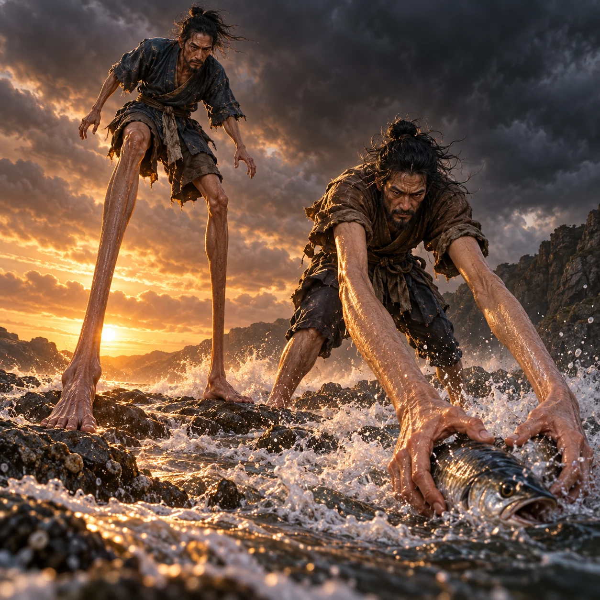
Long-legged and long-armed pair side by side catching a fish.
Aura: Impossible limb proportions c02/c07 and looming storm weather c08, no aura.
Audit ciri dan sumber
- [object Object]
- [object Object]
- [object Object]
Native image inspected: two separate heads and bodies, two arms/two legs each; biological long bare shins with feet replace stilts, and separate long arms catch fish. Strong uncanny low angle and storm shore; no aura, text or borrowed design. Thumbnail checked separately.
Review sumberONE original square premium painterly cinematic Mitoloka illustration of Ashinagatenaga, a pair of Japanese yokai cooperating to catch fish.
ANATOMY: EXACTLY TWO fully clothed humanlike beings, each one head, two eyes, two arms and two legs. LEFT Ashinaga has enormously long thin legs and normal arms, RIGHT Tenaga has enormously long arms reaching over nine meters and normal legs [ashinagatenaga-c02,ashinagatenaga-c07]. Show both complete silhouettes, clearly separated. Opaque short weathered tunics and knee-length trousers; Ashinaga has enormously long EXPOSED LIVING SHINS, visible bare skin, natural ankles and bare human feet. NO stilts, wooden legs, poles, boots or leg wrappings. Tenaga has extraordinarily long living bare arms, each many times torso length; these are real biological limbs.
MOMENT: Both lunge forward while cooperating to scoop a fish from turbulent shoreline water; Ashinaga bends his towering long knees; Tenaga sweeps his impossibly long arms low across water toward the viewer, hands closing around one fish. Intense focused faces, no smiles.
POWER: no invented magical power; threatening weather changes accompany Ashinaga sightings [ashinagatenaga-c08]; ordinary dark storm clouds, wind and physical splashes only.
SCALE & CAMERA: extremely low shoreline camera; full body pair fills the square, impossible limb lengths create awe; no extra limbs or tangles. Ashinaga at left and Tenaga at right, not riding each other.
LIGHT & WEATHER: one low amber sunset shaft through a dark cloudbank, rim light, wind-whipped spray.
SURFACE: weathered skin, soaked coarse indigo and brown cloth, wet rocks and sea foam.
SETTING: rocky Japanese shore with fish in shallows [ashinagatenaga-c04].
MOOD: uncanny awe-inspiring cooperation, imposing impossible anatomy, never cute, comic or calm.
HARD CONSTRAINTS: no text, lettering, logo, border, frame or watermark; no extra heads, limbs or fingers; no film, game, anime or comic designs; no nudity or explicit gore; no generic glow aura, neon outline or energy ribbons.
Atla
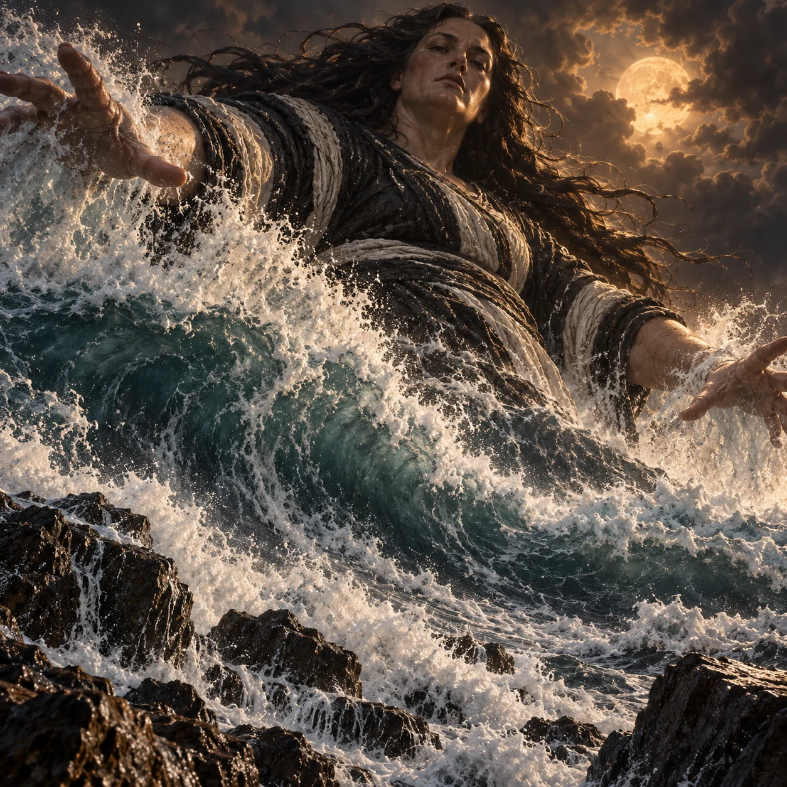
One giantess embodied in a breaking sea wave from the c02 account.
Aura: Presence arises from documented form/action and close low camera, without generic aura.
Audit ciri dan sumber
- [object Object]
- [object Object]
- [object Object]
Native and 200px inspected: one giantess head, two arms and eyes; opaque robe body merges into overwhelming breaker. Wave physical manifestation c02 and world-margin rocks, no invented crown or weapon; no text, aura or borrowed design. All seven Sangar checks pass.
Review sumberONE original square premium painterly cinematic Mitoloka illustration of Atla, Norse giantess and sea-wave figure in the recorded water-goddess account.
ANATOMY: ONE enormous mature giant woman, one head, two eyes, two arms, lower body absorbed in the physically rolling sea; dark hair and fully opaque heavy charcoal and white woven robe [atla-c01,atla-c02]. No crown, weapon or added anatomy.
MOMENT: Rise as a towering breaking sea wave right toward the viewer, spread two powerful arms as the wave bends forward. Her severe giant face fills upper half, deep compassionate power rather than villainous rage.
POWER: She forms the waves of the sea in this account [atla-c02]; ocean mass and foaming water physically overwhelm the foreground. No invented storm control.
SCALE & CAMERA: extreme low angle; giantess and breaker occupy nearly entire square; rocks at base establish overwhelming sea scale.
LIGHT & WEATHER: one dominant low amber moon through dark clouds, deep walnut shadows, strong rim light, ordinary spray or dust appropriate to scene.
SURFACE: tactile weathered natural surfaces, painterly textures, no plastic.
SETTING: The sea at the earth/world margin [atla-c01,atla-c02,atla-c05].
MOOD: imposing and awe-inspiring or menacing as appropriate; active confrontation, never cute, calm or decorative.
HARD CONSTRAINTS: no text, lettering, inscriptions, logo, border, frame or watermark; no extra heads, limbs or fingers; no film, game, anime or comic designs; fully opaque clothing on humanoids; no nudity or explicit gore; no generic glow aura, neon outline or energy ribbons.
Axehandle hound
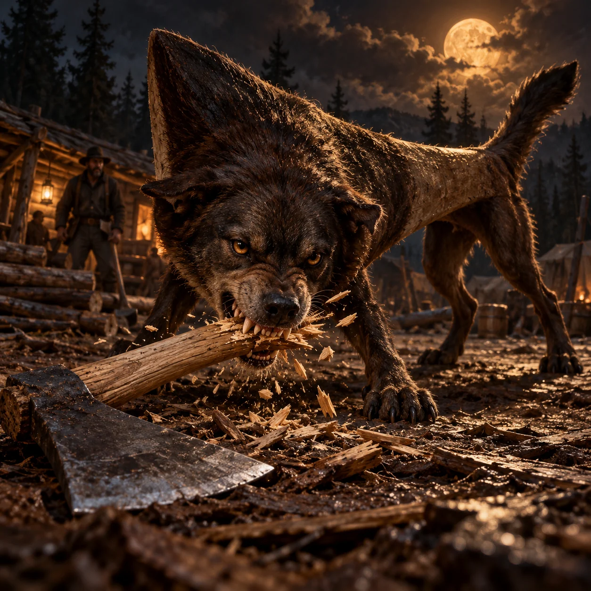
Living axe-bodied hound biting an unattended handle.
Aura: Presence arises from documented form/action and close low camera, without generic aura.
Audit ciri dan sumber
- [object Object]
- [object Object]
- [object Object]
Native inspected: one canine head, two eyes, four canine legs and tail; broad axe-wedge shoulders and long haftlike taper create impossible body silhouette while biting wooden handle. Physical wood splinters c03; normal dog scale beside axe, logging camp night. No text/aura/borrowed designs; all Sangar criteria pass.
Review sumberONE original square premium painterly cinematic Mitoloka illustration of Axehandle hound, an uncanny axe-shaped dog from North American logging-camp folklore.
ANATOMY: ONE living doglike creature with one head, two eyes, four legs and one tail; its whole living body has the distinctive continuous silhouette of a broad wedge-shaped AXE HEAD at the shoulders narrowing into a long wooden-haft-shaped abdomen and tail [axehandle-hound-c02]. It remains a biological beast with coarse dark fur, not a metal axe with legs. Broad flat wedge-shaped skull, long narrow torso, four sinewy canine legs, no horns or wings.
MOMENT: Crouch and violently bite through an unattended ash-wood axe handle toward the viewer, teeth buried in the wood; wood splinters fly from the bite. The axe blade lies safely grounded, blank and dull.
POWER: It eats unattended axe handles [axehandle-hound-c03]; physical bite and splinters only, no magical powers.
SCALE & CAMERA: extreme low angle; tight ground-level confrontation, entire impossible axe silhouette visible, normal dog scale beside a full-size axe.
LIGHT & WEATHER: one dominant low amber moon through dark clouds, deep walnut shadows, strong rim light, ordinary spray or dust appropriate to scene.
SURFACE: tactile weathered natural surfaces, painterly textures, no plastic.
SETTING: A night logging camp in northern American woods [axehandle-hound-c01,axehandle-hound-c05,c06].
MOOD: imposing and awe-inspiring or menacing as appropriate; active confrontation, never cute, calm or decorative.
HARD CONSTRAINTS: no text, lettering, inscriptions, logo, border, frame or watermark; no extra heads, limbs or fingers; no film, game, anime or comic designs; fully opaque clothing on humanoids; no nudity or explicit gore; no generic glow aura, neon outline or energy ribbons.
Azmıç
Menunggu gambar yang lolos audit
Baak
Menunggu gambar yang lolos audit
Babaroga
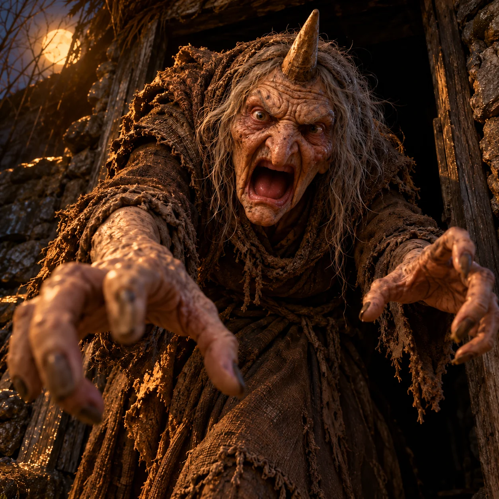
Babaroga, the horned South Slavic nocturnal hag
Aura: Documented form and action dominate through low framing and physical light; no aura.
Audit ciri dan sumber
- [object Object]
- [object Object]
- [object Object]
Native and 200px inspected: one horn, two eyes, two reaching hands, hunched opaque-clothed old woman with empty toothless gums in corrected mouth. Single horn and deformity clear at thumbnail; nighttime reach is predatory, no child/victim/gore. No text, aura or borrowed designs. All seven Sangar checks pass.
Review sumberEDIT the referenced illustration. Preserve all composition, single horn, anatomy, clothes, low lighting and reaching action. Change ONLY mouth: remove every tooth/fang, upper and lower jaw both are entirely toothless with smooth exposed gums. No tooth-shaped projections. Underlying exact illustration specification: ONE original square premium painterly cinematic Mitoloka illustration of Babaroga, the horned South Slavic nocturnal hag.
ANATOMY: ONE hunched ugly old woman with one head, TWO eyes, TWO arms, TWO legs and EXACTLY ONE horn growing from top centre of her head; heavily deformed asymmetrical elderly face and visibly TOOTHLESS open mouth with empty gums [babaroga-c02]. Fully opaque ragged brown dress and shawl. No fangs, tusks or second horn.
MOMENT: Burst forward out of a black narrow lair entrance, hunched almost double, both long bony hands reaching toward the viewer, furious toothless mouth open; no victim or child in picture.
POWER: No documented magical effect; she comes out at night and snatches children [babaroga-c02]; show predatory reaching without depicting harm.
SCALE & CAMERA: extreme low angle; tight close camera, subject fills square, no undocumented giant size.
LIGHT & WEATHER: one dominant amber lantern or low moon, deep walnut shadows, hard rim light; physically ordinary dust or rain appropriate to scene.
SURFACE: tactile weathered skin, coarse cloth, straw, wood or stone; premium painted detail, no plastic.
SETTING: A dark hiding-place entrance at night [babaroga-c02].
MOOD: deeply uncanny, imposing and active; never cute, calm or decorative. Preserve helpful beings as helpful.
HARD CONSTRAINTS: no text, lettering, inscription, logo, border, frame or watermark; no extra heads, eyes, limbs or fingers; no film, game, anime or comic designs; fully opaque clothing on humanoids; no nudity or explicit gore; no generic glowing aura, neon outline, floating runes or energy ribbons.
CRITICAL: Mouth is COMPLETELY TOOTHLESS. Smooth empty upper and lower pink gums, zero fangs, teeth, spikes or tooth-shaped white protrusions anywhere. Choose a wide toothless drooping snarl, smooth rounded upper gum line clearly exposed.
Bájbur
Menunggu gambar yang lolos audit
Bakezōri
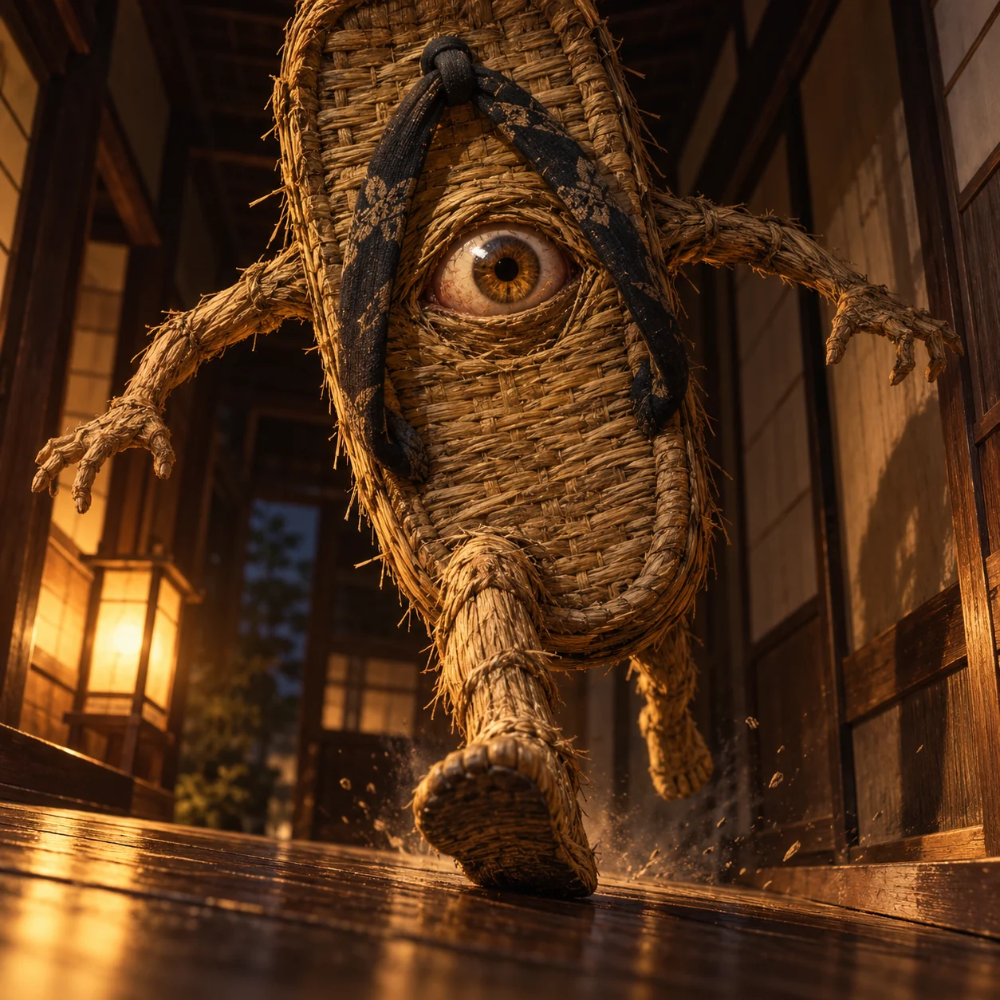
Bakezori, a living Japanese straw sandal yokai
Aura: Documented form and action dominate through low framing and physical light; no aura.
Audit ciri dan sumber
- [object Object]
- [object Object]
- [object Object]
Native and 200px inspected: one straw sandal body with original thong straps, exactly one eye, two arms/hands and two running legs; no human torso or extra face. Imposing floor-level running moment, rough woven texture and single unblinking eye, harmless spooking preserved; no text or aura. All seven Sangar criteria pass.
Review sumberONE original square premium painterly cinematic Mitoloka illustration of Bakezori, a living Japanese straw sandal yokai.
ANATOMY: ONE giant upright traditional straw zori sandal is the entire body, one large living eye in the woven sole, TWO arms and TWO legs sprouting from its edges [bakezori-c01,bakezori-c02,bakezori-c03,bakezori-c05]. Original dark thong straps; NO second eye, no humanoid torso, no teeth.
MOMENT: Run round a dark inhabited house at night, one bare foot striking the wooden floor toward camera and the other behind, two arms swept wide, sole tilted forward; straw fibres and ordinary dust kick up. Eye wide and uncanny, not cute.
POWER: Nighttime household haunting by running and chanting [bakezori-c06]; no written chant or magic, no attack on humans, usually harmless [bakezori-c07].
SCALE & CAMERA: extreme low angle; tight close camera, subject fills square, no undocumented giant size.
LIGHT & WEATHER: one dominant amber lantern or low moon, deep walnut shadows, hard rim light; physically ordinary dust or rain appropriate to scene.
SURFACE: tactile weathered skin, coarse cloth, straw, wood or stone; premium painted detail, no plastic.
SETTING: Japanese household wooden corridor at night [bakezori-c06].
MOOD: deeply uncanny, imposing and active; never cute, calm or decorative. Preserve helpful beings as helpful.
HARD CONSTRAINTS: no text, lettering, inscription, logo, border, frame or watermark; no extra heads, eyes, limbs or fingers; no film, game, anime or comic designs; fully opaque clothing on humanoids; no nudity or explicit gore; no generic glowing aura, neon outline, floating runes or energy ribbons.
Barstuk
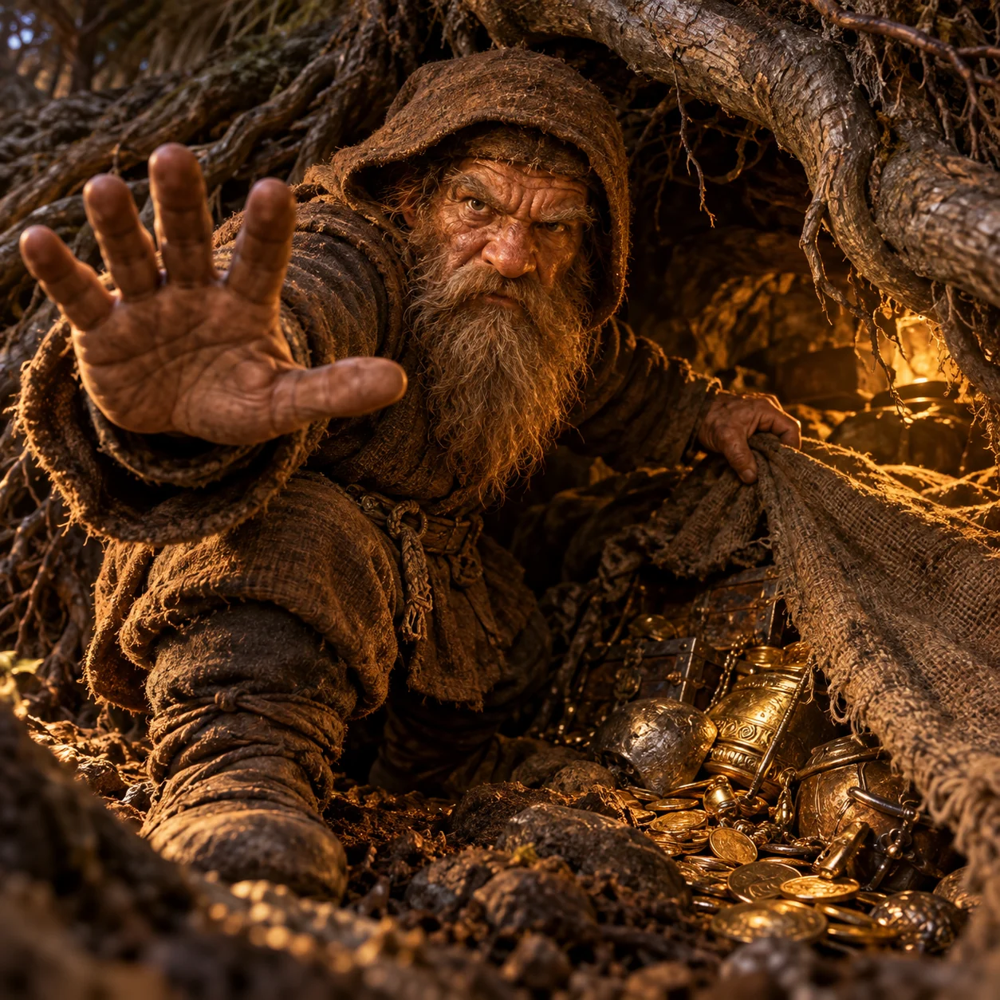
Barstuk, small forest dwarf and guardian of underground treasure
Aura: Documented form and action dominate through low framing and physical light; no aura.
Audit ciri dan sumber
- [object Object]
- [object Object]
- [object Object]
Native and 200px inspected: one short forest dwarf, two eyes and arms, five visible fingers on blocking palm, opaque garment, compact root-hollow scale; treasure guarded beneath other hand. Stern protective action and low framing, no evil effects, text or aura. All seven Sangar criteria pass.
Review sumberONE original square premium painterly cinematic Mitoloka illustration of Barstuk, small forest dwarf and guardian of underground treasure.
ANATOMY: ONE tiny mature dwarf, a little human with one head, two eyes, two arms and two legs [barstuk-c01,barstuk-c04]. Rough elderly face, thick beard and entirely opaque earth-brown tunic, trousers and hood are original clothing. His height is about a nearby tree-root hollow, visibly little beside ordinary full-size roots and coins.
MOMENT: Emerge forcefully from the dark root hollow and extend one palm toward viewer to halt entry while other hand pulls coarse cloth over tarnished treasure; stern alert guardian, not evil and not smiling.
POWER: Guards treasure underground and helps households [barstuk-c04,barstuk-c01]; no magic, weapons, glowing eyes or supernatural effects.
SCALE & CAMERA: extreme low angle; tight close camera, subject fills square, no undocumented giant size.
LIGHT & WEATHER: one dominant amber lamp or low moon, deep walnut shadows, hard rim light; ordinary physical dust or wind.
SURFACE: tactile weathered skin, coarse cloth, matted fur, wood and stone; premium painterly brushwork, no plastic.
SETTING: Below forest tree roots in a natural underground hollow containing treasure [barstuk-c04].
MOOD: imposing and active; never cute, calm or decorative. Preserve helpful beings as helpful and worshipped deities as dignified and reverential.
HARD CONSTRAINTS: no text, lettering, inscriptions, logo, border, frame or watermark; no extra heads, eyes, limbs or fingers; no film, game, anime or comic designs; fully opaque clothing on humanoids; no nudity or explicit gore; no generic glowing aura, neon outline, floating runes or energy ribbons.
Bauchan
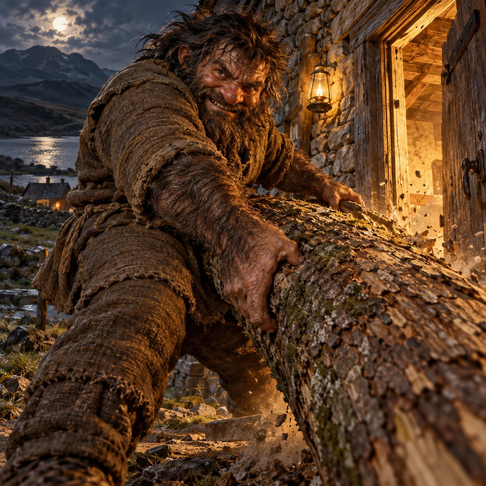
Bauchan, hairy Scottish domestic hobgoblin with extraordinary strength
Aura: Documented form and action dominate through low framing and physical light; no aura.
Audit ciri dan sumber
- [object Object]
- [object Object]
- [object Object]
Native and 200px inspected: hairy hobgoblin with one head/two eyes, two arms gripping tree, two legs; huge felled trunk shoved against farm doorway produces physical chips and dust. Close low camera gives dominance without giant claim. Grinning helpful strength rather than evil; no text/aura/borrowed design. All seven Sangar criteria pass.
Review sumberONE original square premium painterly cinematic Mitoloka illustration of Bauchan, hairy Scottish domestic hobgoblin with extraordinary strength.
ANATOMY: ONE hairy humanoid hobgoblin, one head, TWO eyes, TWO arms and TWO legs, shaggy dark hair across face and forearms [bauchan-c04]; fully opaque coarse brown tunic and trousers. Natural weathered face, no horns, wings, tail or invented anatomy.
MOMENT: Drag a massive freshly felled tree trunk right up against a farmhouse doorway, both hands grip trunk and face turns toward viewer in fierce mischievous grin; trunk knocks door open and makes dust jump.
POWER: Extraordinary strength [bauchan-c07]; delivered wished-for felled tree so house shook and door rattled [bauchan-c11]. Physical tree weight and rattling door, no magic beams.
SCALE & CAMERA: extreme low angle; tight close camera, subject fills square, no undocumented giant size.
LIGHT & WEATHER: one dominant amber lamp or low moon, deep walnut shadows, hard rim light; ordinary physical dust or wind.
SURFACE: tactile weathered skin, coarse cloth, matted fur, wood and stone; premium painterly brushwork, no plastic.
SETTING: Small rocky farm near Loch Traig, Lochaber [bauchan-c08,bauchan-c11].
MOOD: imposing and active; never cute, calm or decorative. Preserve helpful beings as helpful and worshipped deities as dignified and reverential.
HARD CONSTRAINTS: no text, lettering, inscriptions, logo, border, frame or watermark; no extra heads, eyes, limbs or fingers; no film, game, anime or comic designs; fully opaque clothing on humanoids; no nudity or explicit gore; no generic glowing aura, neon outline, floating runes or energy ribbons.
Bell Witch
Menunggu gambar yang lolos audit
Bhairava
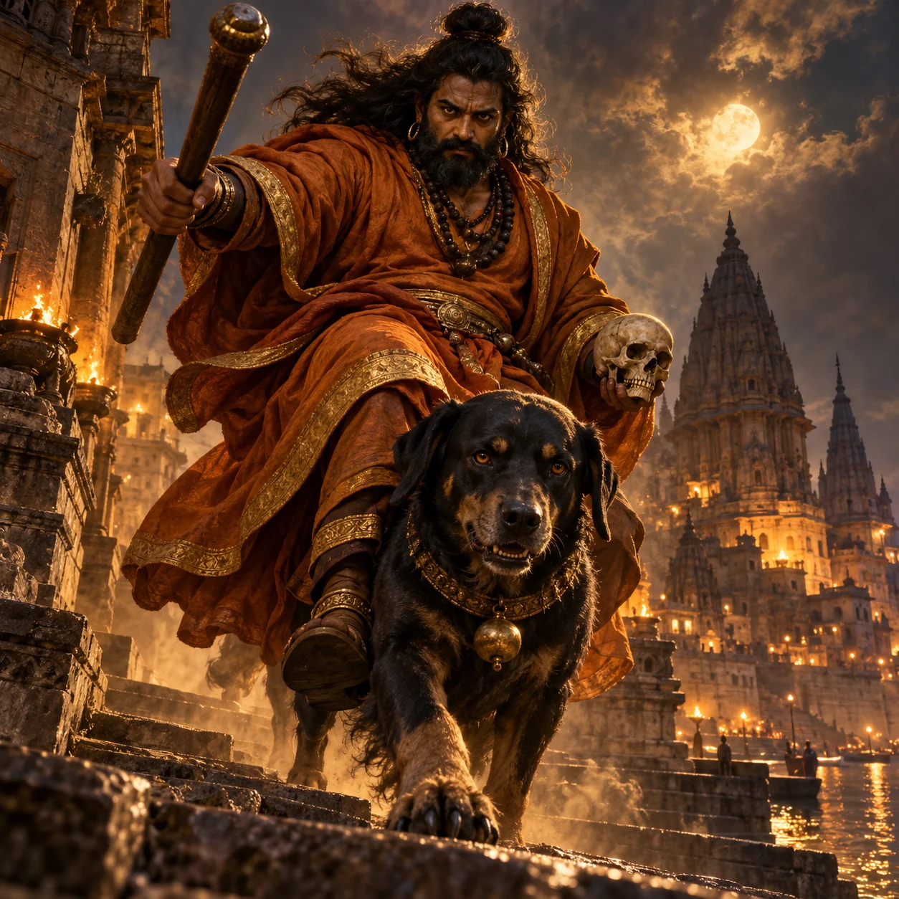
Bhairava, revered powerful manifestation of Shiva in Shaiva and Vajrayana traditions
Aura: Documented form and action dominate through low framing and physical light; no aura.
Audit ciri dan sumber
- [object Object]
- [object Object]
- [object Object]
- [object Object]
Native and 200px inspected: revered imposing deity with two arms, ordinary two eyes and one head, fully opaque saffron robes; right hand extends punishment rod, left carries clean skull, dog vehicle steps forward. Iconography remains distinct at 200px. No third eye/extra limbs, gore, aura or text; reverential stern procession. All seven Sangar checks pass.
Review sumberONE original square premium painterly cinematic Mitoloka illustration of Bhairava, revered powerful manifestation of Shiva in Shaiva and Vajrayana traditions.
ANATOMY: ONE dignified fierce male deity, one head, TWO eyes, TWO arms and TWO legs, fully clothed in heavy opaque dark saffron robes with unmarked antique gold trim [bhairava-c01,bhairava-c02]. RIGHT hand carries large plain punishment ROD [bhairava-c03]; LEFT hand holds a clean ancient skull, no flesh, blood or gore, recalling skull carried to Kashi [bhairava-c06]. ONE dog with one head and four legs serves as his vehicle [bhairava-c04]. No added arms, third eye, fangs, horns, trident or skull garland.
MOMENT: Advance toward viewer astride powerful dog vehicle, lean forward and raise heavy rod in solemn command, eyes severe and focused, robes sweeping; dog forepaws step onto worn stone; deity dominates rather than dog portrait.
POWER: Powerful Shiva manifestation who punishes wrongdoing [bhairava-c02,bhairava-c03]; physical rod and commanding movement only, no invented fire or glowing aura.
SCALE & CAMERA: extreme low angle; tight close camera, subject fills square, no undocumented giant size.
LIGHT & WEATHER: one dominant amber lamp or low moon, deep walnut shadows, hard rim light; ordinary physical dust or wind.
SURFACE: tactile weathered skin, coarse cloth, matted fur, wood and stone; premium painterly brushwork, no plastic.
SETTING: Uninscribed stone approach to Kashi [bhairava-c06].
MOOD: imposing and active; never cute, calm or decorative. Preserve helpful beings as helpful and worshipped deities as dignified and reverential.
HARD CONSTRAINTS: no text, lettering, inscriptions, logo, border, frame or watermark; no extra heads, eyes, limbs or fingers; no film, game, anime or comic designs; fully opaque clothing on humanoids; no nudity or explicit gore; no generic glowing aura, neon outline, floating runes or energy ribbons.
Bitru
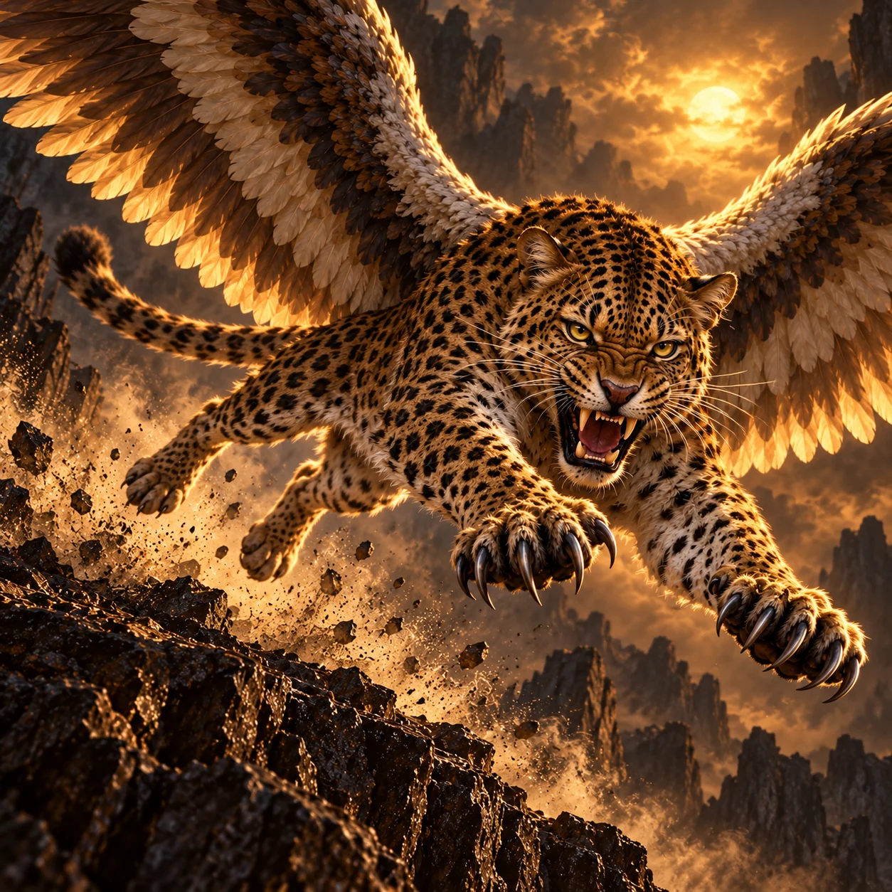
Bitru or Sitri, the goetic great prince as leopard with griffin wings
Aura: Documented form and action dominate through low framing and physical light; no aura.
Audit ciri dan sumber
- [object Object]
- [object Object]
Native and 200px inspected: side-three-quarter flying leopard leap now shows all FOUR separated feline legs/paws (two forepaws projecting right foreground, two hind paws trailing left below torso), one leopard head/two eyes, tail and TWO feathered griffin wings. Original threatening species maintained, physical dust only. No text/aura/borrowed design. All seven Sangar criteria pass.
Review sumberEDIT the referenced image of Bitru. Preserve leopard head/species, spotted fur, TWO feathered griffin wings, dramatic light and threatening leap. Change camera/composition ONLY to a wider SIDE THREE-QUARTER flying leap moving diagonally from left background toward right foreground. Show full torso and ALL FOUR leopard legs/paws separately traceable: two front paws reaching forward and down; TWO hind legs extending backward and below body, both hind paws unobscured and separated, no overlapping paws. Tail distinct. Do not add limbs. Entire leopard body visible, wing tips may crop. Keep aggressive face turned toward viewer. No text, aura or borrowed designs. Original specification: ONE original square premium painterly cinematic Mitoloka illustration of Bitru or Sitri, the goetic great prince as leopard with griffin wings.
ANATOMY: ONE living LEOPARD with one feline head, TWO eyes, FOUR feline legs, one long spotted tail and exactly TWO huge feathered griffin wings attached at shoulders [bitru-c02,bitru-c04]. Leopard head has rounded feline ears, spotted tawny fur; NOT griffin beak, horns, human, extra heads.
MOMENT: Lunge from dark rock ledge directly toward viewer, front claws out and jaws open, two huge feathered wings sweep down throwing ordinary dust from rock. Full animal silhouette reads unmistakably winged leopard.
POWER: No visualized lust power, no victims; menace through winged-leopard anatomy [bitru-c02,bitru-c04]. Physical wing gust and dust only.
SCALE & CAMERA: extreme low angle; tight close camera, subject fills square, no undocumented giant size.
LIGHT & WEATHER: one dominant amber lamp or low moon, deep walnut shadows, hard rim light; ordinary physical dust or wind.
SURFACE: tactile weathered skin, coarse cloth, matted fur, wood and stone; premium painterly brushwork, no plastic.
SETTING: Dark rocky threshold left deliberately nonspecific; great prince of hell identity [bitru-c02].
MOOD: imposing and active; never cute, calm or decorative. Preserve helpful beings as helpful and worshipped deities as dignified and reverential.
HARD CONSTRAINTS: no text, lettering, inscriptions, logo, border, frame or watermark; no extra heads, eyes, limbs or fingers; no film, game, anime or comic designs; fully opaque clothing on humanoids; no nudity or explicit gore; no generic glowing aura, neon outline, floating runes or energy ribbons.
Blud
Menunggu gambar yang lolos audit
Brag
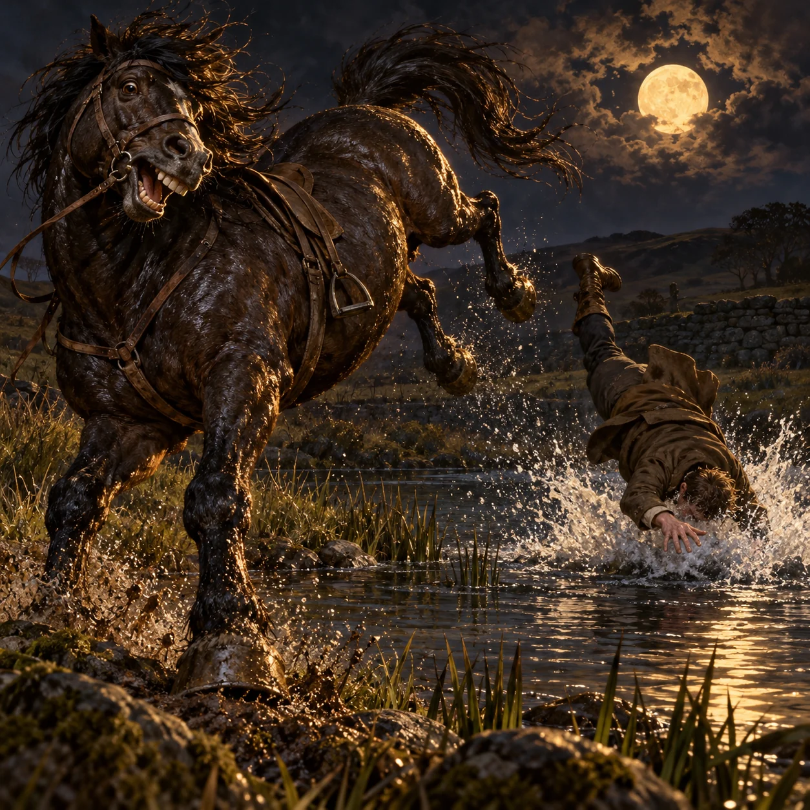
Brag, Northumbrian shape-changing goblin in horse form
Aura: Documented anatomy and deed create presence through physical action and low framing, no generic aura.
Audit ciri dan sumber
- [object Object]
- [object Object]
- [object Object]
Native inspected: horse has one head, natural eyes/mouth, four separated legs and tail; bucking horse expels fully clothed adult rider into pond with large impact splash, no injury shown. Action reads immediately at 200px and differentiates from ordinary horse portrait through c06 deed. No invented monstrous anatomy, aura, text or borrowed design. All Sangar criteria pass.
Review sumberONE original square premium painterly cinematic Mitoloka illustration of Brag, Northumbrian shape-changing goblin in horse form.
ANATOMY: ONE normal-sized horse with one head, two eyes, FOUR legs, one mane and one tail [brag-folklore-c01]. Wet dark coat and real hooves, no horns, wings, human teeth or extra anatomy. ONE fully opaque clothed adult male rider in plain old brown coat, two arms and two legs.
MOMENT: Buck viciously at pond edge while throwing the adult rider headlong far into the middle of water; rider fully airborne away from horse, head and shoulders entering huge cold splash, no injuries. Horse twists neck toward viewer with malicious equine nicker, open mouth with natural horse teeth. Full horse body and FOUR legs clearly separated in side-threequarter view; horse fills two thirds, not a calm riding scene.
POWER: Documented trick: throws rider into pond then runs away laughing [brag-folklore-c01,brag-folklore-c06]; physical bucking and water impact only.
SCALE & CAMERA: extreme low angle; tight close camera, subject fills square, preserve documented scale.
LIGHT & WEATHER: one dominant low amber moon, deep walnut shadows, hard rim light, physical dust or water spray where appropriate.
SURFACE: tactile natural skin, coarse cloth, feathers or fur, weathered wood and stone; premium painterly brushwork.
SETTING: Northumbrian rural pond at night [brag-folklore-c01,brag-folklore-c06].
MOOD: active and imposing, never cute or decorative; preserve helpful beings as benevolent and noble.
HARD CONSTRAINTS: no text, pseudolettering, inscriptions, logo, border, frame or watermark; no extra heads, eyes, limbs or fingers; no film, game, anime or comic designs; fully opaque clothing on humanoids; no nudity, blood or explicit gore; no generic glow aura, neon outline, floating runes or energy ribbons.
Byangoma
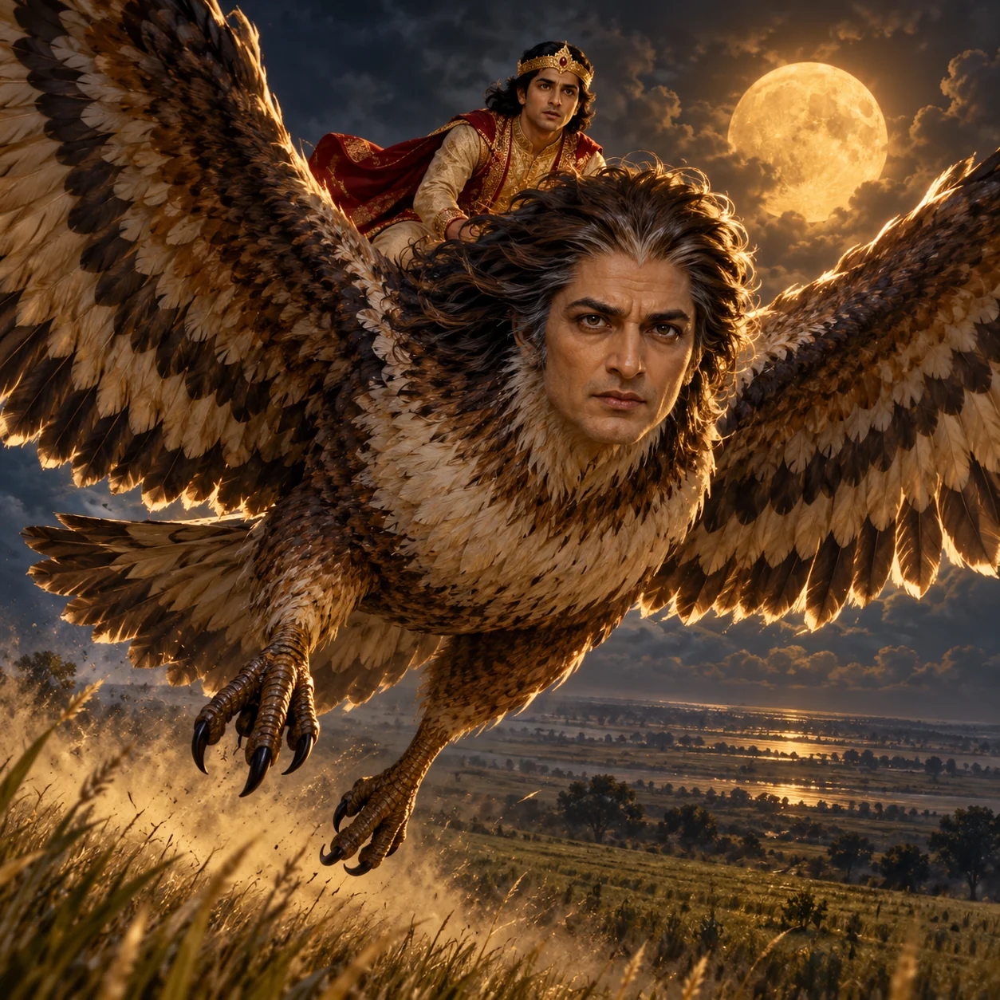
Byangoma, benevolent human-faced bird of Bengali folklore
Aura: Documented anatomy and deed create presence through physical action and low framing, no generic aura.
Audit ciri dan sumber
- [object Object]
- [object Object]
- [object Object]
Native inspected: bird has one human face with two eyes/nose/mouth, no beak or human arms, two feathered wings, two bird legs and tail. One fully clothed prince rides safely across broad field; powerful forward flight, noble calm determination rather than aggression. Human-faced anatomy and flight read at 200px, no text/aura/borrowed design. All seven Sangar criteria pass.
Review sumberONE original square premium painterly cinematic Mitoloka illustration of Byangoma, benevolent human-faced bird of Bengali folklore.
ANATOMY: ONE enormous flight-capable BIRD with one clearly HUMAN FACE, two human eyes, human nose and closed human mouth, feathered neck and body, TWO feathered wings, TWO bird legs and one feather tail [byangoma-c01,byangoma-c07]. No beak, no human arms, no second face. One fully clothed adult prince sits securely on feathered back, no weapon.
MOMENT: Sweep down toward viewer in powerful flight, wings spread almost filling square, human face focused directly ahead; carry grateful prince safely across broad field; feathers stream in physical air. Bird face is mature wise human, alert and noble, never smiling or toy-like.
POWER: Remarkable strength carries princes safely across very large field [byangoma-c04], benevolent help [byangoma-c02]; no prophecy symbols or invented magic.
SCALE & CAMERA: extreme low angle; tight close camera, subject fills square, preserve documented scale.
LIGHT & WEATHER: one dominant low amber moon, deep walnut shadows, hard rim light, physical dust or water spray where appropriate.
SURFACE: tactile natural skin, coarse cloth, feathers or fur, weathered wood and stone; premium painterly brushwork.
SETTING: Broad field from tale Lalkamal Neelkamal [byangoma-c04].
MOOD: active and imposing, never cute or decorative; preserve helpful beings as benevolent and noble.
HARD CONSTRAINTS: no text, pseudolettering, inscriptions, logo, border, frame or watermark; no extra heads, eyes, limbs or fingers; no film, game, anime or comic designs; fully opaque clothing on humanoids; no nudity, blood or explicit gore; no generic glow aura, neon outline, floating runes or energy ribbons.
Byōbunozoki
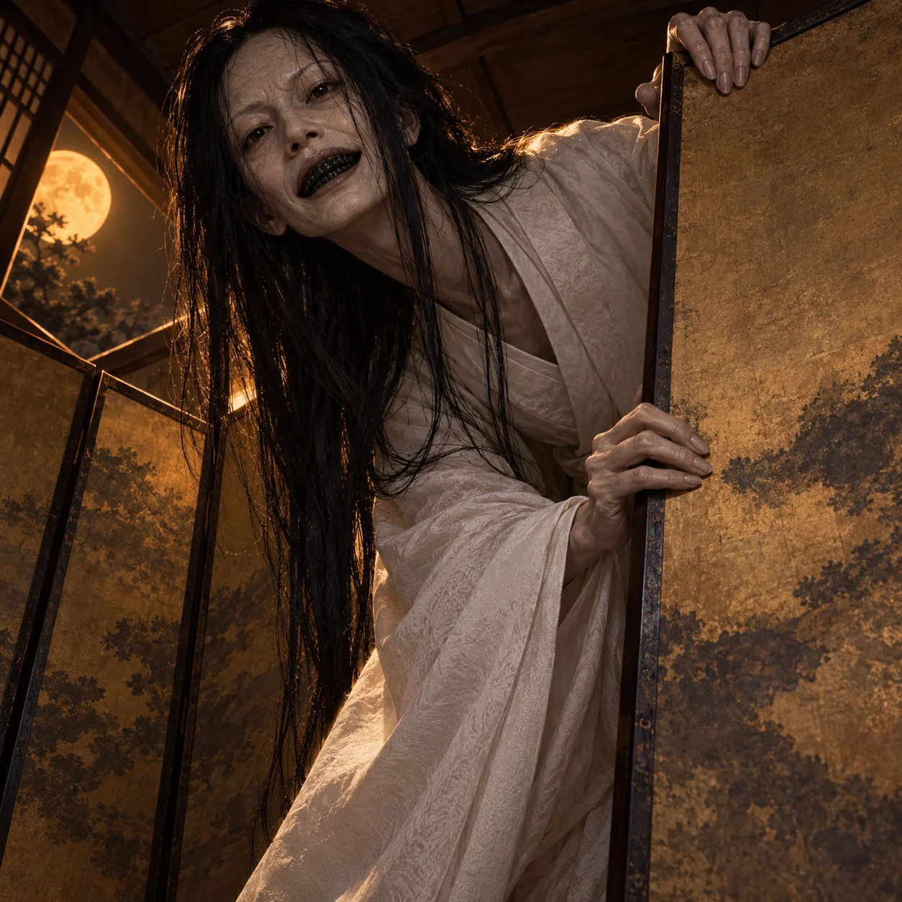
Byobunozoki, tall white-robed screen-peeping Japanese yokai
Aura: Documented anatomy and deed create presence through physical action and low framing, no generic aura.
Audit ciri dan sumber
- [object Object]
- [object Object]
- [object Object]
- [object Object]
Native inspected: one tall slender white-robed spirit, long black hair, two eyes, two arms/hands grasping blank folding-screen edges. Black enamel upper/lower teeth clearly visible; robe fully opaque. Emerging leaning action and dark teeth remain uncanny at 200px, no added anatomy/text/aura. All Sangar criteria pass.
Review sumberONE original square premium painterly cinematic Mitoloka illustration of Byobunozoki, tall white-robed screen-peeping Japanese yokai.
ANATOMY: ONE tall SLENDER humanoid yokai with one head, TWO eyes, TWO arms and TWO legs concealed by fully opaque WHITE robe; long BLACK HAIR and conspicuously BLACK TEETH [byobunozoki-c03,byobunozoki-c04]. Face pallid aged human except black teeth; no horns, added anatomy, blood or corpse wounds.
MOMENT: Emerge from behind folding screen edge directly toward viewer, bend long neck round screen edge, one bony hand clamps screen top and other pulls panel open. Mouth opens enough to show unmistakably BLACK TEETH, individual dark enamel teeth in upper and lower rows. Suspicious direct gaze, looming forward, not neutral portrait.
POWER: Spirit emerging from folding screens [byobunozoki-c02]; tangible screen emergence only, no glowing portal, ghost duplicates or invented powers.
SCALE & CAMERA: extreme low angle; tight close camera, subject fills square, preserve documented scale.
LIGHT & WEATHER: one dominant low amber moon, deep walnut shadows, hard rim light, physical dust or water spray where appropriate.
SURFACE: tactile natural skin, coarse cloth, feathers or fur, weathered wood and stone; premium painterly brushwork.
SETTING: Dark traditional Japanese room with blank uninscribed weathered folding screen [byobunozoki-c02].
MOOD: active and imposing, never cute or decorative; preserve helpful beings as benevolent and noble.
HARD CONSTRAINTS: no text, pseudolettering, inscriptions, logo, border, frame or watermark; no extra heads, eyes, limbs or fingers; no film, game, anime or comic designs; fully opaque clothing on humanoids; no nudity, blood or explicit gore; no generic glow aura, neon outline, floating runes or energy ribbons.
Cabicanca
Menunggu gambar yang lolos audit
Calygreyhound
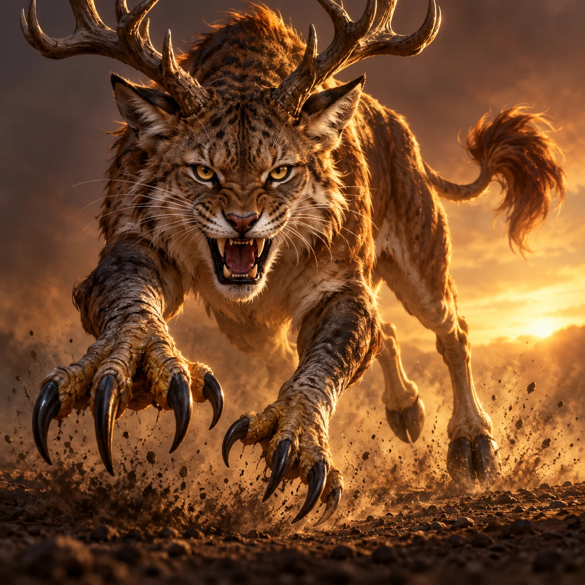
ONE wildcat head, two eyes, pair of antlers, deer torso, TWO eagle-clawed forelegs and TWO ox-hoofed hindlegs, one lion-tufted tail; wingless variant. All four legs visible, claws and hooves unmistakable.
Aura: Imposing action and documented attributes (calygreyhound-c03); effect basis calygreyhound-c04.
Audit ciri dan sumber
- [object Object]
- [object Object]
- [object Object]
Native and 200px inspected: wildcat head, paired antlers, deer torso, two eagle-clawed front feet, two ox-hoofed hind feet, lion tuft tail. Active forward bound dominates frame and reads dangerous at 200px; no supernatural effects, unsupported scale, text, gore or extra limbs. All seven Sangar checks pass.
Review sumberONE original square premium painterly cinematic Mitoloka illustration of Calygreyhound, a living heraldic hybrid associated with speed.
ANATOMY: ONE wildcat head, two eyes, pair of antlers, deer torso, TWO eagle-clawed forelegs and TWO ox-hoofed hindlegs, one lion-tufted tail; wingless variant. All four legs visible, claws and hooves unmistakable. [calygreyhound-c03]
MOMENT: Bound directly toward viewer, foreclaws extended, snarling wildcat face, hind hooves kicking ordinary dust.
POWER: No documented power; menace through hybrid anatomy and swift physical movement only. [calygreyhound-c04]
SCALE & CAMERA: extreme low angle, close framing and foreshortening, subject fills 80% of square; size as documented, no unsupported giant scale.
LIGHT & WEATHER: one dominant warm low sunset or moonbreak, strong rim light and deep walnut shadows, ordinary atmospheric dust or moisture appropriate to setting.
SURFACE: tactile natural textures, wet scales or matted fur where relevant, weathered cloth and rough stone, visible painterly brushwork.
SETTING: Bare dark ground, neutral stage; no specific habitat documented. [calygreyhound-c01]
MOOD: dangerous and imposing for hostile beings; awe-inspiring and respectful for gods, guardians and living traditions, never cute, calm or decorative.
HARD CONSTRAINTS: no text, lettering, logo, border, frame or watermark; no extra heads, limbs or fingers; no design borrowed from any film, game, anime or comic; no nudity or explicit gore; no generic glow aura, neon outline, energy ribbons, floating runes; no additional characters except explicitly specified.
Canens
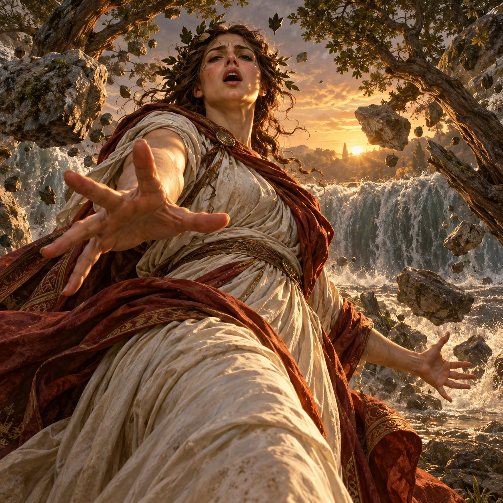
ONE beautiful adult human woman, one head, two eyes, TWO arms, TWO legs, fully opaque layered ancient Roman gown.
Aura: Imposing action and documented attributes (canens-c03); effect basis canens-c04.
Audit ciri dan sumber
- [object Object]
- [object Object]
- [object Object]
Native and 200px inspected: adult nymph sings and gestures, two arms and no visible surplus limbs; opaque Roman gown. Heavy rocks lift and trees bend while Tiber forms stopped water wall, all c04. Subject dominates and active voice power is unmistakable at 200px; no aura, text, gore or borrowed design. All seven Sangar checks pass.
Review sumberONE original square premium painterly cinematic Mitoloka illustration of Canens, the Roman nymph whose singing moved woods and rocks and stopped rivers.
ANATOMY: ONE beautiful adult human woman, one head, two eyes, TWO arms, TWO legs, fully opaque layered ancient Roman gown. [canens-c03]
MOMENT: Sing a commanding note toward the viewer, one hand outstretched, mouth open with grief and authority.
POWER: Her voice physically moves heavy rocks toward her and bends whole trees toward her; the river piles into a stationary wall behind her. No visible sound ribbons or beams. [canens-c04]
SCALE & CAMERA: extreme low angle, close framing and foreshortening, subject fills 80% of square; size as documented, no unsupported giant scale.
LIGHT & WEATHER: one dominant warm low sunset or moonbreak, strong rim light and deep walnut shadows, ordinary atmospheric dust or moisture appropriate to setting.
SURFACE: tactile natural textures, wet scales or matted fur where relevant, weathered cloth and rough stone, visible painterly brushwork.
SETTING: The wooded bank of the Tiber in Latium. [canens-c06]
MOOD: dangerous and imposing for hostile beings; awe-inspiring and respectful for gods, guardians and living traditions, never cute, calm or decorative.
HARD CONSTRAINTS: no text, lettering, logo, border, frame or watermark; no extra heads, limbs or fingers; no design borrowed from any film, game, anime or comic; no nudity or explicit gore; no generic glow aura, neon outline, energy ribbons, floating runes; no additional characters except explicitly specified.
Caquesseitão
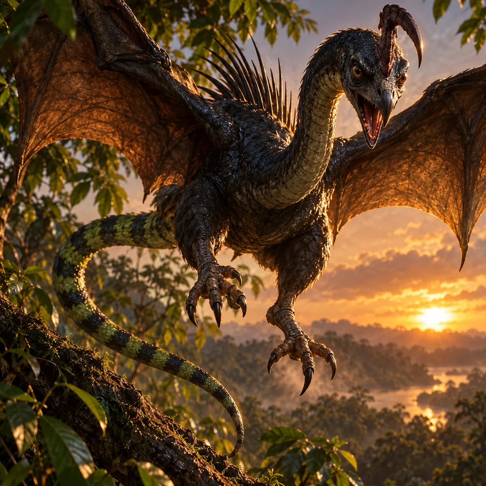
ONE head with ONE cockspur-like forehead claw, two eyes, a long snake neck, humped black scaled duck-sized body with a row of long quill-length dorsal spines, TWO bat wings, TWO birdlike hind feet, one very long green-and-black lizard tail.
Aura: Imposing action and documented attributes (caquesseitao-c02,caquesseitao-c03,caquesseitao-c08); effect basis caquesseitao-c04.
Audit ciri dan sumber
- [object Object]
- [object Object]
- [object Object]
Native and 200px inspected: one cockspur-foreheaded head, long snake neck, humped black scaled body with quill spines, two bat wings, two hindfeet and green-black lizard tail. Branch/leaf size supports large duck scale. Active leap dominates, recognizable dangerous hybrid at 200px; no supernatural effect, text or gore. All seven Sangar checks pass.
Review sumberONE original square premium painterly cinematic Mitoloka illustration of Caquesseitão, the strange bat-winged black creature of Sumatra described by Pinto.
ANATOMY: ONE head with ONE cockspur-like forehead claw, two eyes, a long snake neck, humped black scaled duck-sized body with a row of long quill-length dorsal spines, TWO bat wings, TWO birdlike hind feet, one very long green-and-black lizard tail. [caquesseitao-c02,caquesseitao-c03,caquesseitao-c08]
MOMENT: Leap in flight from a tree limb toward viewer, bat wings spread and snake neck thrust forward, forehead spur clearly outlined.
POWER: No supernatural effect; documented leaping flight and treetop hunting only. [caquesseitao-c04]
SCALE & CAMERA: extreme low angle, close framing and foreshortening, subject fills 80% of square; size as documented, no unsupported giant scale.
LIGHT & WEATHER: one dominant warm low sunset or moonbreak, strong rim light and deep walnut shadows, ordinary atmospheric dust or moisture appropriate to setting.
SURFACE: tactile natural textures, wet scales or matted fur where relevant, weathered cloth and rough stone, visible painterly brushwork.
SETTING: Sumatran treetops; keep leaves normal-sized to show a large-duck-sized creature, no giant scale. [caquesseitao-c01,caquesseitao-c04]
MOOD: dangerous and imposing for hostile beings; awe-inspiring and respectful for gods, guardians and living traditions, never cute, calm or decorative.
HARD CONSTRAINTS: no text, lettering, logo, border, frame or watermark; no extra heads, limbs or fingers; no design borrowed from any film, game, anime or comic; no nudity or explicit gore; no generic glow aura, neon outline, energy ribbons, floating runes; no additional characters except explicitly specified.
Carmençó
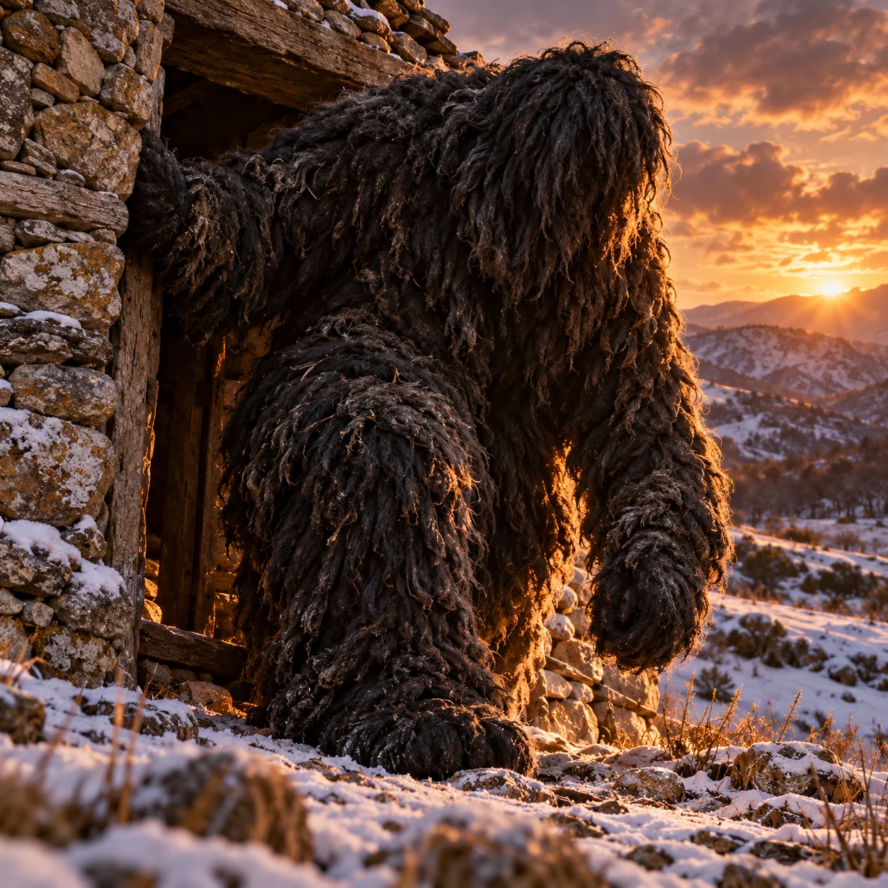
A single spirit black as soot and covered with dense wool from head to foot; one compact head and torso, two arms and two feet kept mostly submerged in uninterrupted wool; do not invent horns, extra eyes, claws or fangs.
Aura: Imposing action and documented attributes (carmenco-c01,carmenco-c06); effect basis carmenco-c04.
Audit ciri dan sumber
- [object Object]
- [object Object]
- [object Object]
Native and 200px inspected: soot-black woolly head-to-foot spirit stoops out of shepherd hut, one arm braced against old masonry and one hangs forward; stepping leg distinct. Dense wool conceals unsupported facial details. Winter mountain setting and bracing hut action c04; imposing close silhouette reads at 200px. No invented glow, horns, fangs, text or gore. All seven Sangar checks pass.
Review sumberONE original square premium painterly cinematic Mitoloka illustration of Carmençó, the soot-black woolly spirit sheltering in Catalan shepherd huts in winter.
ANATOMY: A single spirit black as soot and covered with dense wool from head to foot; one compact head and torso, two arms and two feet kept mostly submerged in uninterrupted wool; do not invent horns, extra eyes, claws or fangs. [carmenco-c01,carmenco-c06]
MOMENT: Emerge stooping through a shepherd hut doorway, wool brushing its stone lintel, one densely wool-covered arm pressing against the old wall.
POWER: Keeps the unused winter hut from collapsing; show its shoulder and arm holding a cracked inward-leaning stone wall in place, no magical glow. [carmenco-c04]
SCALE & CAMERA: extreme low angle, close framing and foreshortening, subject fills 80% of square; size as documented, no unsupported giant scale.
LIGHT & WEATHER: one dominant warm low sunset or moonbreak, strong rim light and deep walnut shadows, ordinary atmospheric dust or moisture appropriate to setting.
SURFACE: tactile natural textures, wet scales or matted fur where relevant, weathered cloth and rough stone, visible painterly brushwork.
SETTING: Winter mountain meadow and unused dry-stone shepherd hut in the Empordà. [carmenco-c01,carmenco-c02,carmenco-c04]
MOOD: dangerous and imposing for hostile beings; awe-inspiring and respectful for gods, guardians and living traditions, never cute, calm or decorative.
HARD CONSTRAINTS: no text, lettering, logo, border, frame or watermark; no extra heads, limbs or fingers; no design borrowed from any film, game, anime or comic; no nudity or explicit gore; no generic glow aura, neon outline, energy ribbons, floating runes; no additional characters except explicitly specified.
Chaac
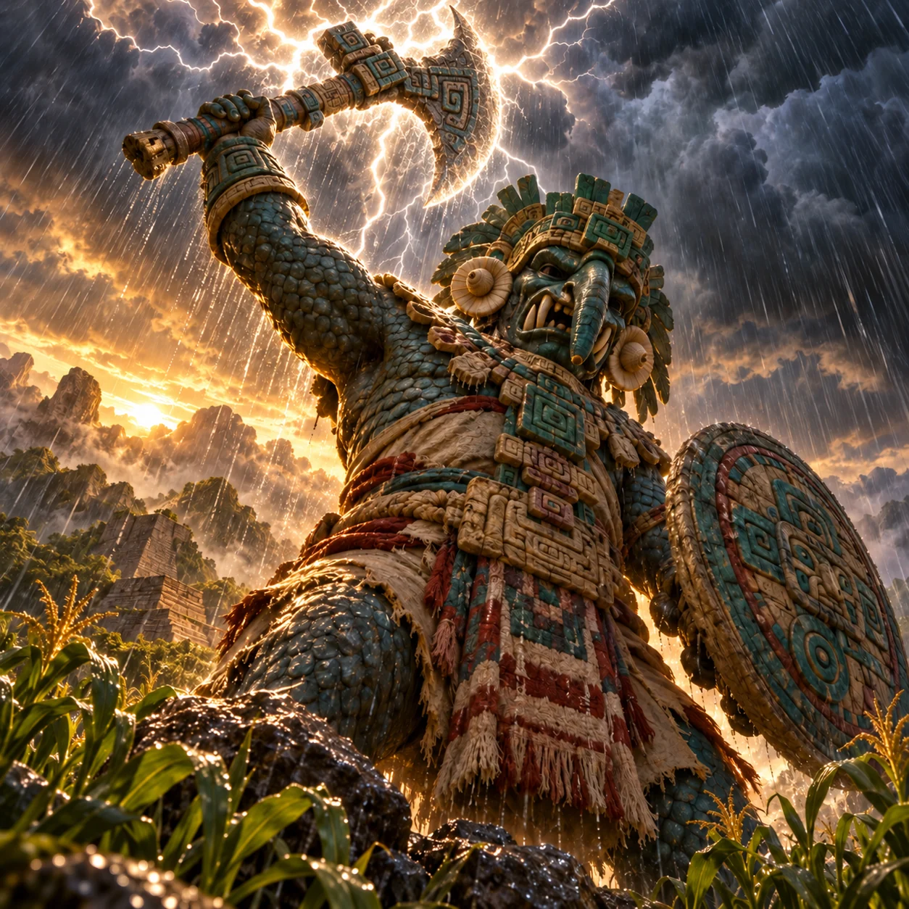
ONE nonhuman head with fangs and a long pendulous nose, shell ear ornaments, scaled humanoid body, two arms, two legs, fully opaque woven Maya garments; one lightning axe in right hand, one shield on left arm.
Aura: Imposing action and documented attributes (chaac-c06); effect basis chaac-c01.
Audit ciri dan sumber
- [object Object]
- [object Object]
- [object Object]
Native and 200px inspected after targeted edit: clearly thin flaring stone AXE head with curved sharpened cutting edge replaces rejected block hammer. Nose/fangs/shell ears/scales/shield/rain/lightning and opaque clothes retained; two arms, no extra anatomy or text. Respectful mighty cloud strike c01/c06, all seven Sangar checks pass.
Review sumberEdit this existing Mitoloka Chaac illustration. Change ONLY the weapon HEAD above his raised right hand: replace the thick square hammer-like block with an unmistakable ancient stone AXE blade: thin flat blade flaring widely to one side of the wooden haft, strongly curved sharpened crescent cutting edge, visible taper and clear blade silhouette against lightning clouds. An axe, absolutely not a rectangular hammer or Mjolnir. Keep existing handle and hand position, lightning cloud contact, and every other pixel/composition as closely as possible: single fanged head with long pendulous nose, shell ears, scaled body, opaque Maya clothes, shield, two arms, rain, maize and rocky mountain setting. Respectful awe-inspiring deity. No text, lettering, logo, watermark, extra limbs, glow aura or borrowed film/game design. The exact source basis is chaac-c01 and chaac-c06 lightning axe. Square premium painterly cinematic style.
Chaneque
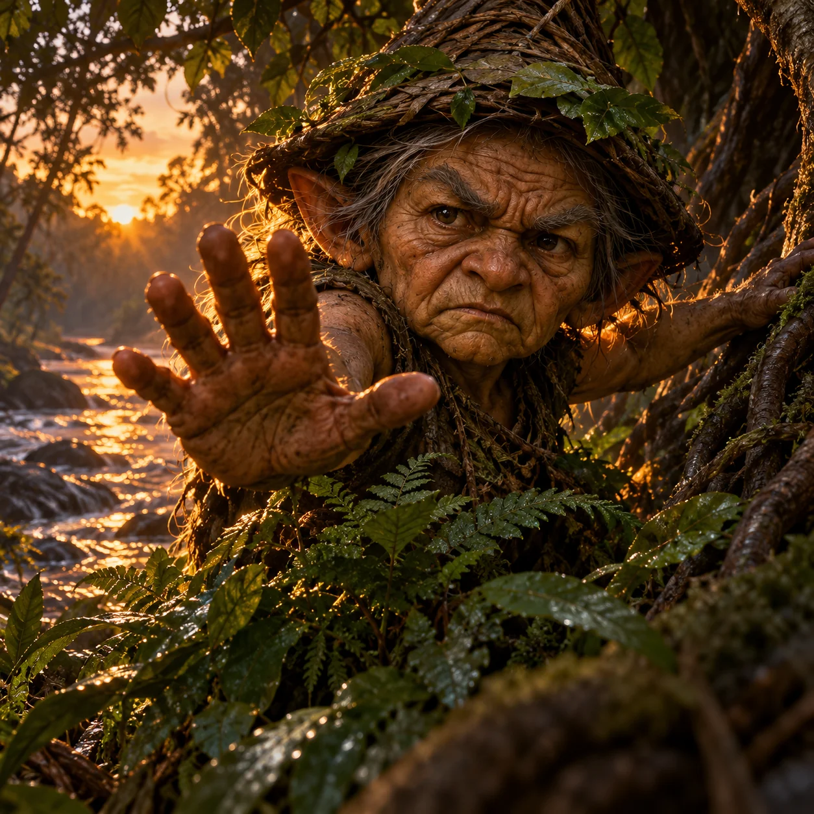
ONE small child-proportioned sprite with a deeply wrinkled OLD adult face, two eyes, two arms and two legs; framing chest-up and opaque leaves/ferns conceal lower body entirely, absolutely no nudity visible.
Aura: Imposing action and documented attributes (chaneque-c02,chaneque-c03,chaneque-c08); effect basis chaneque-c06,chaneque-c09.
Audit ciri dan sumber
- [object Object]
- [object Object]
- [object Object]
Native and 200px inspected: very small sprite with old wrinkled adult face on childlike frame, one head, two arms, five visible fingers on forward hand. Lower body fully occluded by ferns; no nudity. Stern stop gesture in forest/river c08 reads imposing at thumbnail without enlarged body or unsupported magic. Leafy covering/woven cap are modest editorial costume. All seven Sangar checks pass.
Review sumberONE original square premium painterly cinematic Mitoloka illustration of Chaneque, a small guardian spirit of Mexican forests with a child's body and an elderly face.
ANATOMY: ONE small child-proportioned sprite with a deeply wrinkled OLD adult face, two eyes, two arms and two legs; framing chest-up and opaque leaves/ferns conceal lower body entirely, absolutely no nudity visible. [chaneque-c02,chaneque-c03,chaneque-c08]
MOMENT: Lean out from tangled roots toward viewer, one hand thrust out to bar entry, stern aged expression and intent eyes.
POWER: Protects nature and deters intruders; no visible magic or unsupported glowing eyes; menace from ancient face on small body and confrontational gesture. [chaneque-c06,chaneque-c09]
SCALE & CAMERA: extreme low angle, close framing and foreshortening, subject fills 80% of square; size as documented, no unsupported giant scale.
LIGHT & WEATHER: one dominant warm low sunset or moonbreak, strong rim light and deep walnut shadows, ordinary atmospheric dust or moisture appropriate to setting.
SURFACE: tactile natural textures, wet scales or matted fur where relevant, weathered cloth and rough stone, visible painterly brushwork.
SETTING: Dense Mexican forest beside a river, normal-sized ferns establish small size. [chaneque-c08]
MOOD: dangerous and imposing for hostile beings; awe-inspiring and respectful for gods, guardians and living traditions, never cute, calm or decorative.
HARD CONSTRAINTS: no text, lettering, logo, border, frame or watermark; no extra heads, limbs or fingers; no design borrowed from any film, game, anime or comic; no nudity or explicit gore; no generic glow aura, neon outline, energy ribbons, floating runes; no additional characters except explicitly specified.
Chedipe
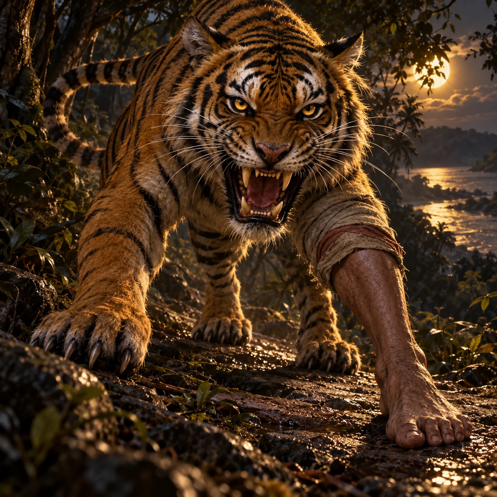
ONE tiger head, two feline eyes, striped tiger torso and tail; EXACTLY FOUR legs: THREE tiger legs with paws and ONE HUMAN foreleg from knee downward ending in five-toed human foot. Human leg modestly wrapped above knee in opaque coarse cloth. No separate rider or human head.
Aura: Imposing action and documented attributes (chedipe-c05,chedipe-c13); effect basis chedipe-c13.
Audit ciri dan sumber
- [object Object]
- [object Object]
- [object Object]
Native and 200px inspected: single tiger with exactly four legs: one human front leg/foot prominently forward, other three feline paws separately visible; one head/tail. Opaque wrap above human knee, no nudity. Aggressive jungle attack c13 with Godavari moonlit setting, no blood or added magic. Hybrid unmistakable at 200px, all seven Sangar checks pass.
Review sumberONE original square premium painterly cinematic Mitoloka illustration of Chedipe, the Godavari witch in her documented Murulupuli tiger form.
ANATOMY: ONE tiger head, two feline eyes, striped tiger torso and tail; EXACTLY FOUR legs: THREE tiger legs with paws and ONE HUMAN front right leg from knee downward ending in five-toed human foot. Human leg modestly wrapped above knee in opaque coarse cloth. No separate rider or human head. [chedipe-c05,chedipe-c13]
MOMENT: Spring from a dark forest path toward viewer, one human foot planted conspicuously at foreground right, three tiger paws clearly separate; snarling mouth.
POWER: Documented tiger shapeshift attacks passers-by; no extra magic effects or blood. [chedipe-c13]
SCALE & CAMERA: extreme low angle, close framing and foreshortening, subject fills 80% of square; size as documented, no unsupported giant scale.
LIGHT & WEATHER: one dominant warm low sunset or moonbreak, strong rim light and deep walnut shadows, ordinary atmospheric dust or moisture appropriate to setting.
SURFACE: tactile natural textures, wet scales or matted fur where relevant, weathered cloth and rough stone, visible painterly brushwork.
SETTING: Moonlit jungle near the Godavari River. [chedipe-c01,chedipe-c13]
MOOD: dangerous and imposing for hostile beings; awe-inspiring and respectful for gods, guardians and living traditions, never cute, calm or decorative.
HARD CONSTRAINTS: no text, lettering, logo, border, frame or watermark; no extra heads, limbs or fingers; no design borrowed from any film, game, anime or comic; no nudity or explicit gore; no generic glow aura, neon outline, energy ribbons, floating runes; no additional characters except explicitly specified.
Cottus
Menunggu gambar yang lolos audit
Cuyancúa
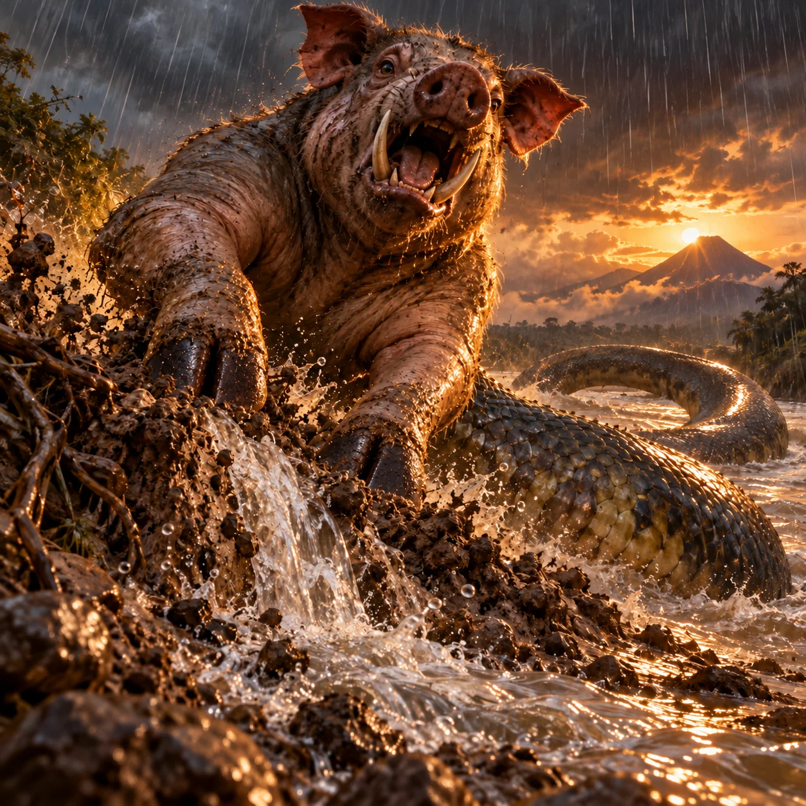
ONE pig head with two ears and two eyes, pig upper torso and TWO pig forelegs; continuous lower half is ONE long thick snake body coiling into tail, NO hind legs, NO wings or horns.
Aura: Imposing action and documented attributes (cuyancua-c04); effect basis cuyancua-c02,cuyancua-c09,cuyancua-c13.
Audit ciri dan sumber
- [object Object]
- [object Object]
- [object Object]
Native and 200px inspected after hoof correction: one pig head/torso, two forelegs now ending in paired black cloven hoof halves, continuous coiling snake lower body with no hind legs. Fresh spring erupts from dug riverbank c09, rain c13. Aggressive cry/physical digging dominates frame; no aura, text or gore. All seven Sangar checks pass.
Review sumberEdit ONLY both front feet of this Cuyancúa pig-serpent illustration: replace the clawed fingerlike bear paws with unmistakable PIG CLOVEN HOOVES, each foot has exactly TWO broad blunt black hoof halves split by a central cleft, and no long claws or fingers. Both hooves press/dig mud on riverbank. Preserve every other detail and composition: single pig head with snout and ears, upper pig torso, two forelegs, long coiling snake lower body with NO hind legs, rain, clean spring gushing from dug hollow. Square original painterly cinematic style. No text, aura, extra limbs or gore. Source cuyancua-c04 upper half pig; cuyancua-c09 spring where it digs.
Dakhanavar
Menunggu gambar yang lolos audit
Danzaburou-danuki
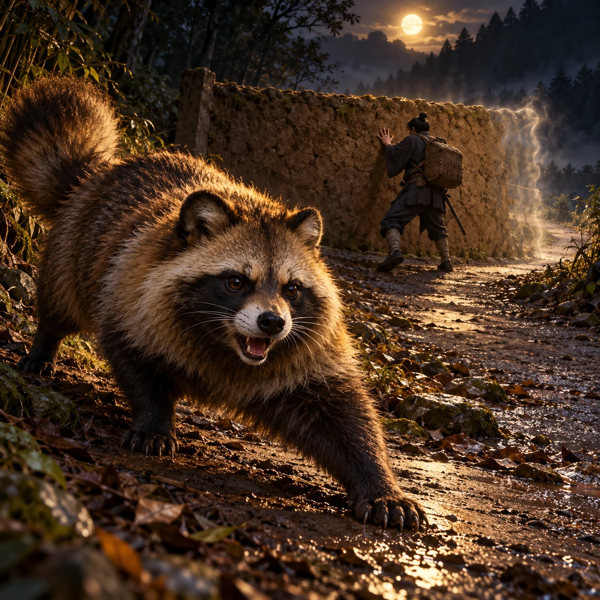
ONE realistic tanuki raccoon-dog head with dark eye mask, two eyes, two ears, four paws and bushy tail; no human clothes, no exaggerated anatomy.
Aura: Imposing action and documented attributes (danzaburou-danuki-c01,danzaburou-danuki-c03); effect basis danzaburou-danuki-c04,danzaburou-danuki-c06.
Audit ciri dan sumber
- [object Object]
- [object Object]
- [object Object]
Native and 200px inspected: active forward tanuki with snarling open mouth, natural eye mask, no extra anatomy. Isolated transverse wall now visibly blocks narrow path before recoiling adult, path continues beyond transparent rippled edge; this stages c04/c06 documented obstruction and mirage, without earth eruption. One dominant moon lights edge rather than body aura. Subject and active supernatural incident read at 200px; all seven Sangar checks pass.
Review sumberONE original square premium painterly cinematic Mitoloka illustration of Danzaburou-danuki, revered supernatural tanuki leader of Sado whose illusions obstructed night travellers.
ANATOMY: ONE realistic raccoon-dog tanuki, natural dark eye mask, TWO ears, TWO eyes, FOUR paws, ONE bushy tail. No clothes, no enlarged supernatural body. [danzaburou-danuki-c01,danzaburou-danuki-c03]
MOMENT: The tanuki springs sideways into the extreme foreground, stern mouth open in command, one paw stamping the narrow road. At this exact instant a WALL-LIKE ILLUSION suddenly appears ACROSS THE MIDDLE OF THE PATH directly behind him. One fully clothed adult traveller in the middle distance reels back, hand against this impossible obstruction, interrupted mid-stride.
POWER: Documented path obstruction and mirage. Show a transverse earthen wall only two metres long and taller than traveller, isolated in the MIDDLE of an otherwise open curving path, with abrupt vertical ends and no adjoining walls. The path is plainly visible BEFORE the wall and continues BEYOND its edges toward dark forest. At its far right end the wall is partially transparent and rippled like heat-haze, allowing the continued path to be faintly seen through. NO magical glow, no energy ribbons, no floating debris, no ground eruption; the wall is an illusion, not earth manipulation. [danzaburou-danuki-c04,danzaburou-danuki-c06]
SCALE & CAMERA: camera at tanuki eye level just above path; tanuki very close fills lower and left 65%, clear impossible transverse obstruction and startled adult in upper right; natural animal size established by path leaves, no giant.
LIGHT & WEATHER: one dominant amber moonbreak, deep walnut shadows, strong fur rim light, ordinary cold night mist.
SURFACE: rough real tanuki fur, muddy road; wall sharp textured centre with heat-mirage indistinct edge.
SETTING: rural Sado night footpath near Aikawa. [danzaburou-danuki-c01,danzaburou-danuki-c08]
MOOD: awe-inspiring uncanny supernatural guardian actively closing a path, never ordinary calm wildlife portrait.
HARD CONSTRAINTS: no text, lettering, logo, border, watermark; no extra limbs, heads, tails, horns; no borrowed film/game/anime design; no nudity, gore, aura, glowing eyes, neon or runes. Not a garden wall, not a retaining wall, not an animal just standing beside masonry.
Demirkıynak
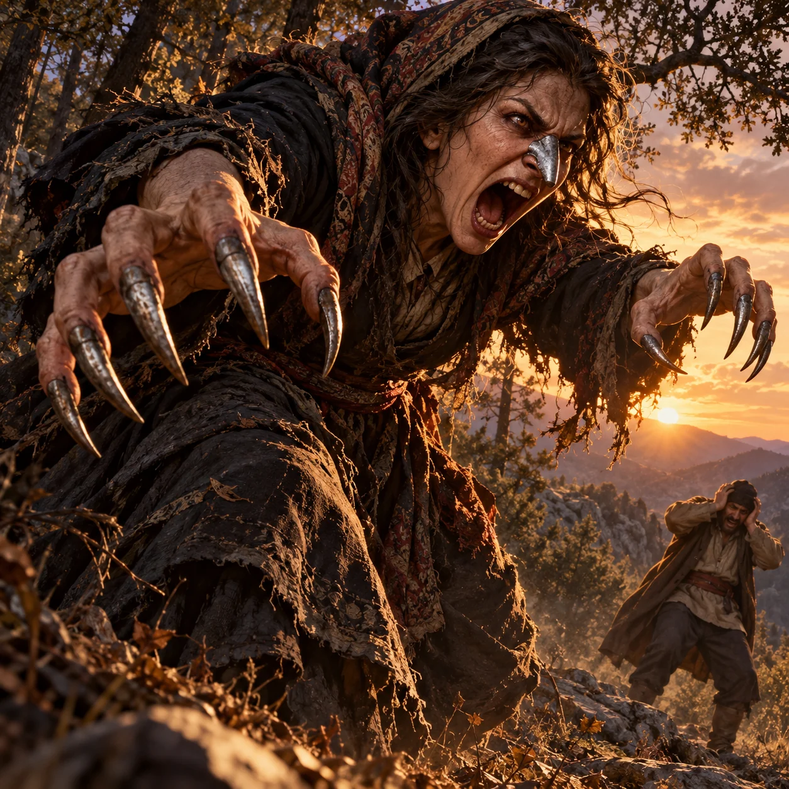
ONE beautiful adult woman's head with ONE clearly metallic iron nose, two eyes, TWO arms with long iron fingernails, two legs; fully opaque weathered dark dress and shawl.
Aura: Imposing action and documented attributes (demirk-ynak-c04); effect basis demirk-ynak-c01,demirk-ynak-c09.
Audit ciri dan sumber
- [object Object]
- [object Object]
- [object Object]
Native and 200px inspected: single woman head with unmistakable iron nose and two hands ending in metallic iron nails, five digits per hand; opaque weathered clothing. Screaming lunge and distant adult clutching ears stage cry c01/c09 without energy effects. Low close framing dominates; victim stands lower on slope, no giant size claimed. No text/gore/aura. All seven Sangar checks pass.
Review sumberONE original square premium painterly cinematic Mitoloka illustration of Demirkıynak, the iron-nailed shapechanging female monster of the Bigadiç mountains.
ANATOMY: ONE beautiful adult woman's head with ONE clearly metallic iron nose, two eyes, TWO arms with long iron fingernails, two legs; fully opaque weathered dark dress and shawl. [demirk-ynak-c04]
MOMENT: Lunge from forest shadow and scream toward viewer; reach both iron-nailed hands forward, iron nose visible in three-quarter profile rather than hidden.
POWER: Her terrible cries drive people mad; do not visualize sound as energy, show only aggressive cry and a distant fully clothed adult clutching ears. [demirk-ynak-c01,demirk-ynak-c09]
SCALE & CAMERA: extreme low angle, close framing and foreshortening, subject fills 80% of square; size as documented, no unsupported giant scale.
LIGHT & WEATHER: one dominant warm low sunset or moonbreak, strong rim light and deep walnut shadows, ordinary atmospheric dust or moisture appropriate to setting.
SURFACE: tactile natural textures, wet scales or matted fur where relevant, weathered cloth and rough stone, visible painterly brushwork.
SETTING: Mountain forest of Bigadiç, dry ground far from water. [demirk-ynak-c01,demirk-ynak-c07]
MOOD: dangerous and imposing for hostile beings; awe-inspiring and respectful for gods, guardians and living traditions, never cute, calm or decorative.
HARD CONSTRAINTS: no text, lettering, logo, border, frame or watermark; no extra heads, limbs or fingers; no design borrowed from any film, game, anime or comic; no nudity or explicit gore; no generic glow aura, neon outline, energy ribbons, floating runes; no additional characters except explicitly specified.
Devāntaka
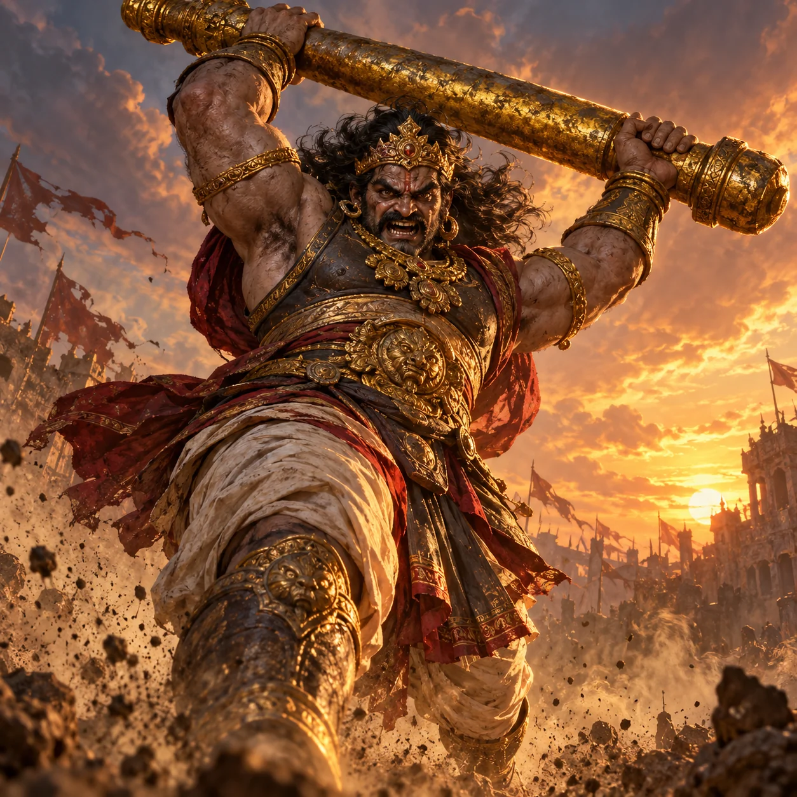
ONE adult male rakshasa warrior head, two eyes, TWO arms, TWO legs, fully opaque layered ancient Indian battle garments and restrained armor; one enormous gold-covered IRON BAR gripped in both hands. Do not invent extra heads, horns or arms.
Aura: Imposing action and documented attributes (devantaka-c01,devantaka-c04,devantaka-c06); effect basis devantaka-c07,devantaka-c08.
Audit ciri dan sumber
- [object Object]
- [object Object]
- [object Object]
Native and 200px inspected: single warrior head, two arms gripping one giant gilded iron bar, two legs in powerful forward charge. Opaque ancient Indian garments and armor are editorial choices. Gold-covered iron bar c04/c06 and charging strike c07/c08 distinguish fierce rakshasa warrior, imposing at 200px. No horns/extra heads, aura, gore or text. All seven Sangar checks pass.
Review sumberONE original square premium painterly cinematic Mitoloka illustration of Devāntaka, the rakshasa warrior of the Ramayana who charged holding a gilded iron bar.
ANATOMY: ONE adult male rakshasa warrior head, two eyes, TWO arms, TWO legs, fully opaque layered ancient Indian battle garments and restrained armor; one enormous gold-covered IRON BAR gripped in both hands. Do not invent extra heads, horns or arms. [devantaka-c01,devantaka-c04,devantaka-c06]
MOMENT: Charge toward viewer while raising the heavy gilded iron bar for a battle strike; fierce determined face and dynamic dust.
POWER: No documented magical effect; the physical weight of the gold-covered iron bar and charge convey formidable strength. [devantaka-c07,devantaka-c08]
SCALE & CAMERA: extreme low angle, close framing and foreshortening, subject fills 80% of square; size as documented, no unsupported giant scale.
LIGHT & WEATHER: one dominant warm low sunset or moonbreak, strong rim light and deep walnut shadows, ordinary atmospheric dust or moisture appropriate to setting.
SURFACE: tactile natural textures, wet scales or matted fur where relevant, weathered cloth and rough stone, visible painterly brushwork.
SETTING: Dusty battle front in the war against Rama, opponents outside frame. [devantaka-c03,devantaka-c08]
MOOD: dangerous and imposing for hostile beings; awe-inspiring and respectful for gods, guardians and living traditions, never cute, calm or decorative.
HARD CONSTRAINTS: no text, lettering, logo, border, frame or watermark; no extra heads, limbs or fingers; no design borrowed from any film, game, anime or comic; no nudity or explicit gore; no generic glow aura, neon outline, energy ribbons, floating runes; no additional characters except explicitly specified.
Dewa Nun
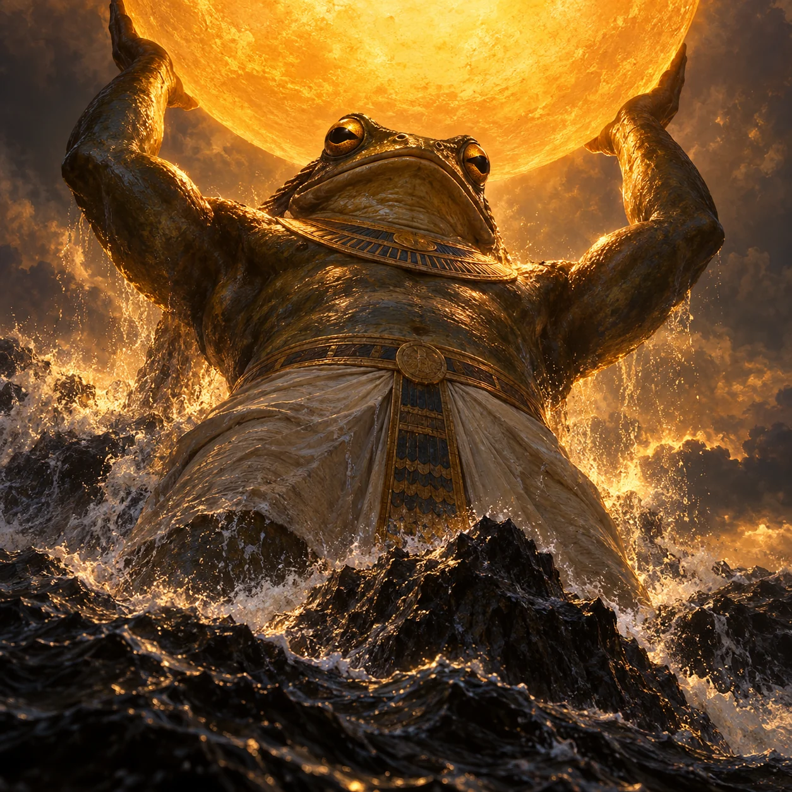
ONE giant frog head with two eyes on a large anthropomorphic body, TWO arms, TWO legs concealed below water, opaque Egyptian linen kilt, BOTH hands holding aloft ONE large plain solar disc.
Aura: Imposing action and documented attributes (dewa-nun-c06); effect basis dewa-nun-c03,dewa-nun-c07.
Audit ciri dan sumber
- [object Object]
- [object Object]
- [object Object]
Native and 200px inspected: one frog head with two eyes on large anthropomorphic torso, two arms hold solar disc above, opaque linen kilt, lower legs underwater. Primordial waters surge and mound emerges c03/c07; disc is physical source c06 not aura. Majestic active lift dominates thumbnail, no text/gore or extra anatomy. All seven Sangar checks pass.
Review sumberONE original square premium painterly cinematic Mitoloka illustration of Nun, the great Egyptian deity personifying primordial waters.
ANATOMY: ONE giant frog head with two eyes on a large anthropomorphic body, TWO arms, TWO legs concealed below water, opaque Egyptian linen kilt, BOTH hands holding aloft ONE large plain solar disc. [dewa-nun-c06]
MOMENT: Rise powerfully from black primordial waters while lifting the enormous sun disc overhead, gaze downward toward viewer.
POWER: Primordial waters surge around his body and the first dark mound of land rises from them beneath him; warm light comes only from the supported solar disc. [dewa-nun-c03,dewa-nun-c07]
SCALE & CAMERA: extreme low angle, close framing and foreshortening, subject fills 80% of square; size as documented, no unsupported giant scale.
LIGHT & WEATHER: one dominant warm low sunset or moonbreak, strong rim light and deep walnut shadows, ordinary atmospheric dust or moisture appropriate to setting.
SURFACE: tactile natural textures, wet scales or matted fur where relevant, weathered cloth and rough stone, visible painterly brushwork.
SETTING: The primordial watery abyss at creation, vast black water and emerging land. [dewa-nun-c03,dewa-nun-c07]
MOOD: dangerous and imposing for hostile beings; awe-inspiring and respectful for gods, guardians and living traditions, never cute, calm or decorative.
HARD CONSTRAINTS: no text, lettering, logo, border, frame or watermark; no extra heads, limbs or fingers; no design borrowed from any film, game, anime or comic; no nudity or explicit gore; no generic glow aura, neon outline, energy ribbons, floating runes; no additional characters except explicitly specified.
Dianho
Menunggu gambar yang lolos audit
Dijiang
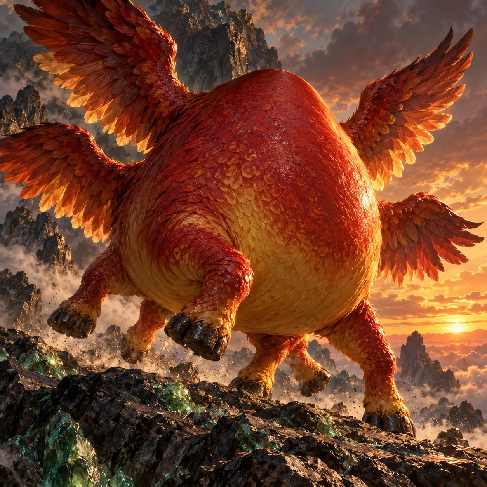
ONE plump SACK-shaped rounded YELLOW body flushed cinnabar RED, absolutely NO HEAD, NO FACE, NO EYES, NO MOUTH; EXACTLY SIX short legs spaced separately along lower body, EXACTLY FOUR distinct feathered wings: two on each side, spread at different heights with clear gaps. No tail.
Aura: Imposing action and documented attributes (dijiang-c02,dijiang-c06,dijiang-c07); effect basis dijiang-c07.
Audit ciri dan sumber
- [object Object]
- [object Object]
- [object Object]
Native and 200px inspected: faceless sack body red/yellow with NO head, eyes, mouth or nose. EXACTLY FOUR wings: high/low on each side, and SIX separately visible short legs: two foreshortened in front, four below/lateral body. Bounding dance c07 dominates over jade/mineral mountain stones c06. No destructive effects, aura or text; all seven Sangar checks pass.
Review sumberONE original square premium painterly cinematic Mitoloka illustration of Dijiang, the faceless mountain guardian spirit described in the Classic of Mountains and Seas.
ANATOMY: ONE plump SACK-shaped rounded YELLOW body flushed cinnabar RED, absolutely NO HEAD, NO FACE, NO EYES, NO MOUTH; EXACTLY SIX short legs spaced separately along lower body, EXACTLY FOUR distinct feathered wings: two on each side, spread at different heights with clear gaps. No tail. [dijiang-c02,dijiang-c06,dijiang-c07]
MOMENT: Dance in a powerful bounding turn over mountain stones, six feet visible and separately countable, four wings flaring; faceless smooth front dominates.
POWER: No destructive powers invented; documented dancing and red radiance rendered as cinnabar surface caught by sunset, no generic aura. [dijiang-c07]
SCALE & CAMERA: extreme low angle, close framing and foreshortening, subject fills 80% of square; size as documented, no unsupported giant scale.
LIGHT & WEATHER: one dominant warm low sunset or moonbreak, strong rim light and deep walnut shadows, ordinary atmospheric dust or moisture appropriate to setting.
SURFACE: tactile natural textures, wet scales or matted fur where relevant, weathered cloth and rough stone, visible painterly brushwork.
SETTING: Mount Tian with dark mineral-rich crags and small jade-colored stones. [dijiang-c01,dijiang-c06]
MOOD: dangerous and imposing for hostile beings; awe-inspiring and respectful for gods, guardians and living traditions, never cute, calm or decorative.
HARD CONSTRAINTS: no text, lettering, logo, border, frame or watermark; no extra heads, limbs or fingers; no design borrowed from any film, game, anime or comic; no nudity or explicit gore; no generic glow aura, neon outline, energy ribbons, floating runes; no additional characters except explicitly specified.
Dorlis
Menunggu gambar yang lolos audit
Dzahui
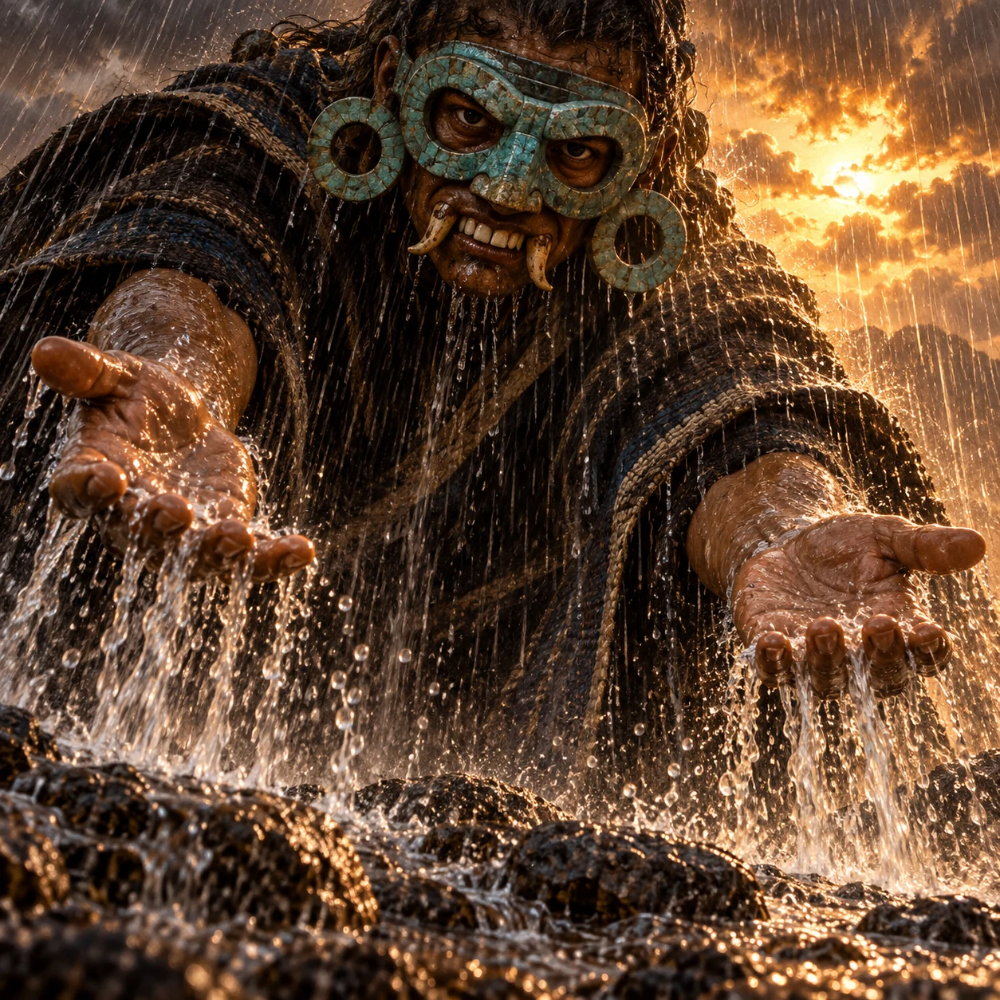
Living rain deity with blue-green goggle mask, exposed incisors and curled jaguar canines in forceful rainfall.
Aura: Rain domain c04 manifests as physical falling water around distinctive mask c02/c03; no aura.
Audit ciri dan sumber
- [object Object]
- [object Object]
- [object Object]
Native and 200px inspected: one head, two masked eyes, exposed flat incisors and two curled canines; two arms and naturally formed open hands. Rain strikes rocks and pours beside hands, without magic beams or aura. Face/mask dominate; active leaning confrontation remains awe-inspiring at thumbnail. Opaque mantle, no text, all seven Sangar checks pass.
Review sumberONE original square premium painterly cinematic Mitoloka illustration of Dzahui, the revered Mixtec divinity of rain and celestial water.
ANATOMY: ONE living masculine deity, ONE head, TWO eyes surrounded by a very large BLUE-GREEN rain GOGGLE MASK with two round rings, exposed flat incisor teeth and two longer gently curled JAGUAR canine teeth emerging from curled lips; human arms exactly TWO. Full opaque plain woven dark mantle, no invented crown or weapons [dzahui-c02,dzahui-c03].
MOMENT: Lean forward through a heavy curtain of rain, spread his two open hands downward as celestial water cascades to the stony ground; gaze fixed intensely downward toward viewer.
POWER: rain and celestial water physically pour through the frame, rivulets and spray striking rock, no lightning or energy beams [dzahui-c04].
SCALE & CAMERA: extreme low close angle; face, bold mask rings, teeth, hands and mantle fill square; use framing for overwhelming divine presence rather than human scale comparison.
LIGHT & WEATHER: one dominant warm sunset break behind storm cloud, strong amber rim on mask and falling rain, deep walnut shadows, forceful physical water.
SURFACE: matte turquoise mineral mask, curled teeth, wet coarse woven fabric, rain-soaked stone.
SETTING: rocky Highland Mixteca hillside, background secondary and almost entirely obscured by rain [dzahui-c06].
MOOD: reverently awe-inspiring tutelary rain god, imposing and active, never evil, cute, calm or decorative.
HARD CONSTRAINTS: no text, lettering, pseudoinscriptions, logo, border, frame or watermark; no extra heads, limbs or fingers; no design borrowed from any film, game, anime or comic; no nudity or explicit gore; no generic glow aura, neon outline or energy ribbons. Original painterly brushwork and dark warm palette.
Endill
Menunggu gambar yang lolos audit
Enerbanske
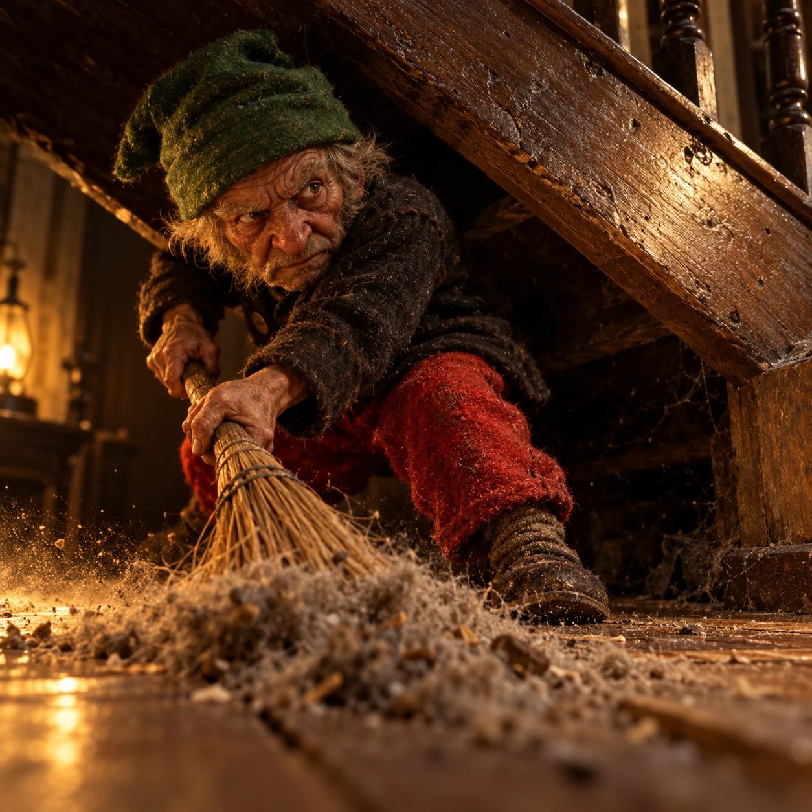
A tiny Heligoland house-helper emerging beneath stairs in red trousers and green cap.
Aura: Tiny scale beside stair treads c01 and forceful midnight housework c04 create uncanny presence without magic aura.
Audit ciri dan sumber
- [object Object]
- [object Object]
- [object Object]
Native and 200px inspected: tiny aged dwarf under large staircase in green cap/red trousers, two arms gripping broom, two bent legs, active dust sweep. Close low confrontation and scale against treads remain uncanny at thumbnail. No extra limbs, text, glow or invented power. Seven Sangar checks pass.
Review sumberONE original square premium painterly cinematic Mitoloka illustration of an Enerbanske, the tiny subterranean house-helper of Heligoland.
ANATOMY: ONE small dwarf-like person, one head, two eyes, two arms and two legs, wearing vivid RED TROUSERS, a GREEN CAP and an opaque dark wool jacket, weathered aged face [enerbanske-c01]. No glowing eyes, horns or deformities.
MOMENT: Surge out from the pitch-dark gap UNDER A WOODEN STAIRCASE while forcefully sweeping a thick mound of real floor dust toward the camera with a short straw broom held in both hands; glance fiercely sideways at viewer mid-task. Crouched bent knees and body torque make this an intense action moment.
POWER: no documented visible power; physically completing household chores overnight [enerbanske-c04].
SCALE & CAMERA: extreme floor-level close angle, tiny being fills foreground; ONE ordinary massive staircase tread towers directly behind at head-height, broom tiny, clear small scale, never giant size.
LIGHT & WEATHER: one low off-frame warm oil lamp illuminates the lined face from below, hard rim light, deep under-stair shadow and physical dust in air.
SURFACE: coarse red wool trousers, scuffed green felt cap, aged skin, splintered stair timber, rough straw.
SETTING: old Heligoland house beneath its interior staircase at midnight [enerbanske-c01,enerbanske-c04].
MOOD: uncanny and imposing tiny supernatural houseworker, concentrated action; never cute mascot, calm decorative gnome or ordinary human.
HARD CONSTRAINTS: no text, lettering, inscriptions, logo, border, frame or watermark; no extra heads, limbs or fingers; no design borrowed from any film, game, anime or comic; no nudity or explicit gore; no generic glow aura, neon outline or energy ribbons. Premium painterly brushwork, dark warm walnut and antique gold palette, square composition.
Enma
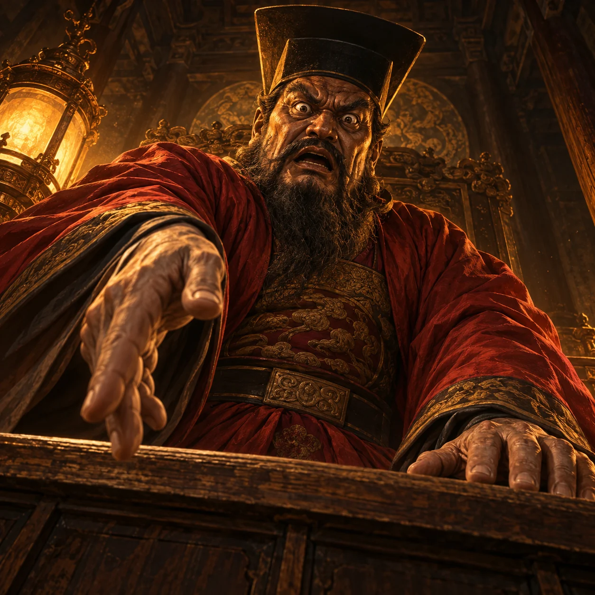
Severe Buddhist underworld king seated behind a judge's desk in Chinese official cap and robe.
Aura: The immense tribunal composition and stern official iconography c08 convey judicial authority c03/c06 without aura.
Audit ciri dan sumber
- [object Object]
- [object Object]
- [object Object]
Native and 200px inspected: bulging eyes/grimacing judgement face, plain official cap and opaque red official robes, two arms one hand on desk and one gesturing. Active tribunal close low angle makes imposing sacred judge; no invented torture or magic. Desk and robe ornament contain no letters. All seven Sangar checks pass.
Review sumberONE original square premium painterly cinematic Mitoloka illustration of Enma, the revered Japanese Buddhist king of the underworld presiding at judgement.
ANATOMY: ONE king with ONE head, TWO strongly BULGING EYES and a wide GRIMACING MOUTH; two arms, fully opaque voluminous dark red Chinese OFFICIAL ROBES and a broad plain black Chinese OFFICIAL CAP. Cap entirely blank, no symbol or letter [enma-c08].
MOMENT: Lean forward powerfully from his throne behind an immense plain wooden judge's desk, one broad hand planted flat on its front edge, other hand extended downward in a decisive commanding gesture toward the viewer; mouth open pronouncing judgement, stare unwavering.
POWER: solemn authority of the underworld tribunal assigning souls; no invented visible magic, weapons, fire breath or torture [enma-c03,enma-c06].
SCALE & CAMERA: extreme low angle from floor beneath desk edge; Enma's strongly distorted judicial face, cap, gesturing hands and sweeping robe fill the whole square; monumental sacred presence.
LIGHT & WEATHER: one dominant amber lamp beside the desk throws deep walnut shadows and gold rim across cap and bulging eyes; tiny ordinary dust motes, no magic fog.
SURFACE: deeply carved-looking yet living weathered face, heavy opaque silk robe, matte cap, worn ancient timber desk.
SETTING: dark imposing underworld judgement hall, desk directly before the king, architectural darkness secondary [enma-c01,enma-c08].
MOOD: reverential awe and stern judicial majesty, sacred dignified presence; never evil caricature, ordinary man, cute or decorative.
HARD CONSTRAINTS: no text, lettering, inscriptions, logo, border, frame or watermark; no extra heads, limbs or fingers; no design borrowed from any film, game, anime or comic; no nudity or explicit gore; no generic glow aura, neon outline or energy ribbons. Premium painterly brushwork, dark warm walnut and antique gold palette, square composition.
Entenwick
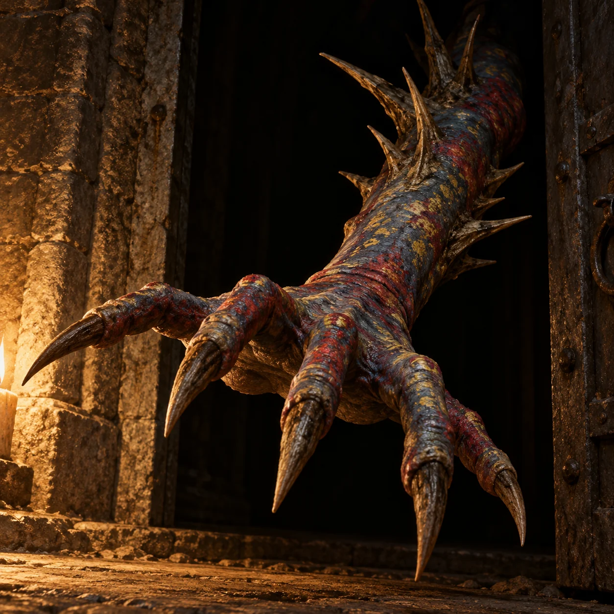
Only the ghastly spiked multicoloured arm that Entenwick disclosed is visible from castle darkness.
Aura: Documented frightful arm c04/c08 dominates frame; no imagined full body or generic aura.
Audit ciri dan sumber
- [object Object]
- [object Object]
Native and 200px inspected: exactly one revealed arm, five pointed fingers, long spikes down elbow/forearm, dark blue skin with red patches and yellow speckles. No face or full body invented; active reaching limb fills frame. Skin is intact with no wounds/gore. No text/aura; all seven Sangar checks pass.
Review sumberONE original square premium painterly cinematic Mitoloka illustration of Entenwick, the mysterious castle spirit revealing only the dreadful arm described in the Zimmern Chronicle.
ANATOMY: ONLY ONE ARM AND HAND revealed from absolute dark, NO visible torso, head, face or second arm. Long rigid organic SPIKES project from the elbow and run along the entire forearm; five long sharply pointed fingers. Arm's frightful SKIN is BLUE mixed with BLOOD-RED patches and YELLOW SPECKLES, fully intact skin, no blood, wounds or gore [entenwick-c04,entenwick-c08]. Do not invent a body behind the arm.
MOMENT: Thrust the spiked elbow and outstretched pointed fingers toward the viewer from behind a heavy stone castle doorway, fingers dramatically extended as if reluctantly allowing the viewer a single terrible glimpse. Arm diagonally fills entire square.
POWER: no documented visible power used; dread entirely from the revealed arm anatomy and sudden gesture.
SCALE & CAMERA: extreme low close angle at hand-level, arm dominates; no invented giant size, doorway only narrow background reference.
LIGHT & WEATHER: one low warm candle outside frame rakes across coloured skin and spike edges; rest pitch black, deep walnut shadow, ordinary dust.
SURFACE: rough mottled blue/red/yellow skin, dry horny spikes, chipped medieval stone doorway.
SETTING: dark interior of Sachsenheim castle [entenwick-c01].
MOOD: unsettling, physically imposing revelation, never calm or decorative; the arm is unmistakable subject.
HARD CONSTRAINTS: no text, lettering, inscriptions, logo, border, frame or watermark; no extra heads, limbs or fingers; no design borrowed from any film, game, anime or comic; no nudity or explicit gore; no generic glow aura, neon outline or energy ribbons. Premium painterly brushwork, dark warm walnut and antique gold palette, square composition.
Ewiger Jäger
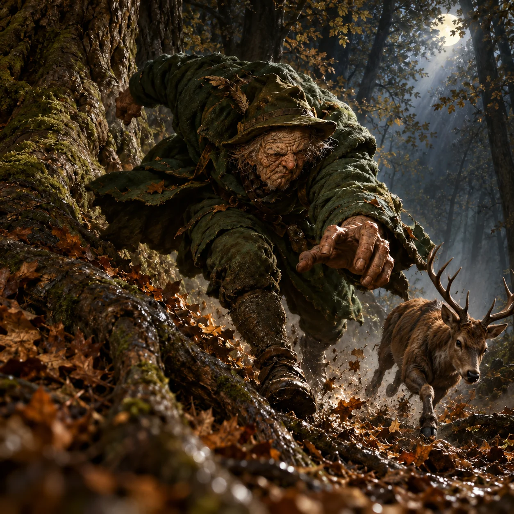
Gnarled little green-clad eternal hunter with fist-sized withered face, pursuing the same stag.
Aura: Uncanny shrivelled face c21, small body/green clothing c04 and relentless pursuit c20 rather than magic aura.
Audit ciri dan sumber
- [object Object]
- [object Object]
- [object Object]
Native and 200px re-inspected after correction: gnarled green little man and fist-sized deeply shrivelled face unchanged. Stag now ahead at foreground right, three-quarter facing toward camera in same running direction; the pursuit relation is clear. Two arms/two legs, no extra anatomy. Root-rejected first attempt archived with exact prompt/path/hash/reason. Active uncanny charge, no aura/text. Seven Sangar checks pass.
Review sumberEDIT the provided Ewiger Jäger image. Keep the hunter's tiny shrivelled wrinkled face, green clothing, two arms/two legs, low camera, tree roots, lighting, texture and all other visual details exactly unchanged. Change ONLY the stag placement and orientation: remove the distant stag running away in the back right. Place a clearly smaller stag slightly AHEAD OF the hunter on the RIGHT foreground path, running in the SAME direction TOWARD THE CAMERA at a three-quarter angle. Its head/antlers should aim toward the lower right/front, its body extends diagonally back toward hunter, so the hunter is visibly chasing behind it. Stag remains secondary and small, does not cover hunter's face or hands. No added animals or people. No text, inscriptions, watermark, glow, gore or extra anatomy. This is the documented endless pursuit of the same stag [ewiger-jager-c20]. Original low-key painterly forest illustration remains identical except this corrected chase relation.
Failinis
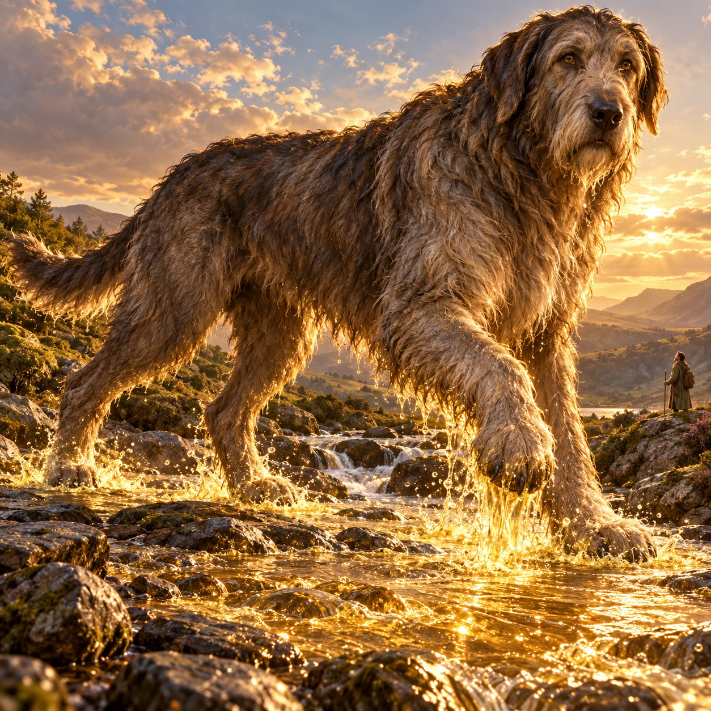
Huge noble daytime hound walking through stream that becomes golden white wine on fur contact; four paws explicitly visible.
Aura: Documented huge day form c06 and stream-to-wine transformation c04/c07 provide physical mythic spectacle without generic aura.
Audit ciri dan sumber
- [object Object]
- [object Object]
- [object Object]
Native and 200px inspected: all four canine legs and four separate paws clear (two hind at left, lifted near forepaw, planted far forepaw at right); one head, two eyes, one tail. Huge scale beside tiny standing adult, closed mouth solemn expression, active lifted paw and contact splashes. Clear upstream versus golden white-wine downstream, no red liquid or violence. Monumental scale maintains awe at thumbnail. No extra anatomy/text/aura. Seven Sangar checks pass.
Review sumberONE original square premium painterly cinematic Mitoloka illustration of Failinis, the immense daytime mythic hound of Lugh whose contact turns water into wine.
ANATOMY: ONE enormous noble shaggy grey-brown HOUND, one head, two natural amber eyes, exactly FOUR canine LEGS and FOUR distinct PAWS, ONE tail; no horns, wings or other fantastical anatomy [failinis-c01,failinis-c06].
MOMENT: Stride majestically across a shallow stream in full THREE-QUARTER SIDE VIEW, body extending leftward from a head facing camera at frame right. CLOSED MOUTH, solemn proud protective expression. Near front paw lifts mid-stride; far front paw plants ahead; both hind legs are fully visible behind at different positions. Whole body and all FOUR PAWS within image. No snarling, biting, fighting, distress, injury or prey.
POWER: transparent incoming stream changes to clear GOLDEN WHITE WINE where it touches his fur and paws; subtle golden fluid spreads downstream in beautiful physical splashes, never red liquid [failinis-c04,failinis-c07].
SCALE & CAMERA: very low angle and monumental documented daytime size; one very small fully clothed adult traveler stands safely on far riverbank looking up in wonder, well apart from hound; enormous full body dominates square [failinis-c06].
LIGHT & WEATHER: one golden late afternoon sun, amber rim on wet fur and translucent pale-gold wine droplets, dark walnut shadows under the huge body; daylight sky.
SURFACE: rough wet shaggy grey-brown fur, clear water, translucent golden white wine, grey stream rocks.
SETTING: beautiful rocky Irish stream, distant hills secondary [failinis-c01].
MOOD: majestic and overwhelmingly awe-inspiring legendary hound; noble movement and enormous scale distinguish from ordinary dog. Entirely nonviolent.
HARD CONSTRAINTS: no text, lettering, inscriptions, logo, border, frame or watermark; no extra heads, limbs or fingers; no design borrowed from any film, game, anime or comic; no nudity or explicit gore; no generic glow aura, neon outline or energy ribbons. Premium painterly brushwork, dark warm walnut and antique gold palette, square composition.
Fand
Fand and Lí Ban as two otherworldly seabirds flying joined by a gold chain; Fand dominates foreground.
Aura: Otherworldly seabird pair physically linked by gold chain c03 and commanding flight create reverent awe.
Audit ciri dan sumber
- [object Object]
- [object Object]
- [object Object]
Native and 200px inspected: exactly two seabirds, separate one-headed/two-winged anatomies, joined by visible single gold chain between neck loops. Front Fand dominates in forceful flight with direct downward gaze, gold chain remains legible at 200px; real sea spray only. No human hybrid, glow, text or extra limbs. Seven Sangar checks pass.
Review sumberONE original square premium painterly cinematic Mitoloka illustration of Fand, the otherworldly Irish sea goddess in seabird form, flying with her sister Lí Ban joined by a gold chain.
ANATOMY: EXACTLY TWO living SEABIRDS with white and charcoal-grey feathering, each ONE head, TWO dark natural eyes, TWO wings, TWO tucked bird feet, ONE tail; Fand much closer and dominant, Lí Ban behind. ONE clearly visible physical GOLD CHAIN links their neck bases in a sweeping taut arc, no collar text [fand-c03]. No human heads or human arms.
MOMENT: Sweep forcefully low toward the viewer over dark sea, Fand's broad wings lifting in a forceful upstroke as the second bird banks behind; chain arcs diagonally through spray, real gold links readable. Fand looks down directly at viewer. Powerful decisive flight, not peaceful floating.
POWER: documented otherworldly seabird form and linked flight [fand-c03], no invented sea-control effects, glowing feathers or magic.
SCALE & CAMERA: extreme low close angle just above sea surface; foreground Fand's head, spread wings and chain fill square; sister clearly separate behind, normal bird size through close framing, never a giant animal.
LIGHT & WEATHER: single sunset shaft on gold links and feather edges; deep warm walnut sea shadows, ordinary wind-driven spray.
SURFACE: layered real damp feathers, wet curved seabird beaks, heavy physical hammered gold chain, textured sea.
SETTING: open sea associated with Fand as sea goddess, background secondary [fand-c06].
MOOD: reverent awe, uncanny otherworldly linked flight; active and imposing, never cute, calm decorative birds.
HARD CONSTRAINTS: no text, lettering, inscriptions, logo, border, frame or watermark; no extra heads, limbs or fingers; no design borrowed from any film, game, anime or comic; no nudity or explicit gore; no generic glow aura, neon outline or energy ribbons. Premium painterly brushwork, dark warm walnut and antique gold palette, square composition.
Fangfeng
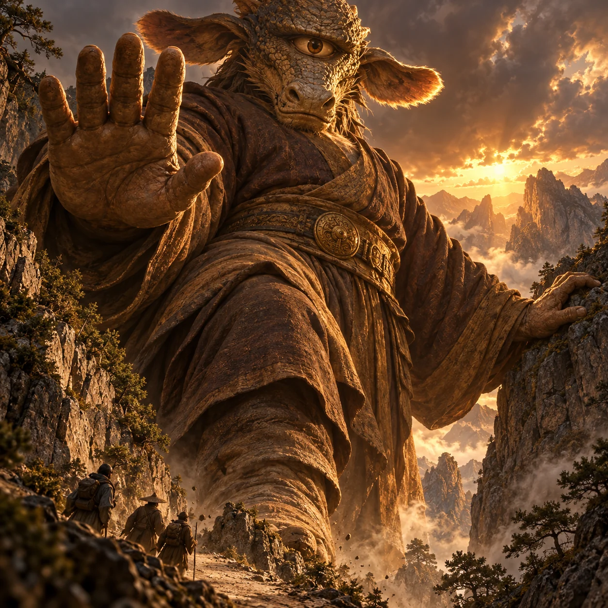
Revered giant guardian with one eye and brow, dragon head and ox ears, striding across mountain pass.
Aura: Enormous scale c03 and one-eyed dragon head/ox ears c08 convey reverential guardian power without added aura.
Audit ciri dan sumber
- [object Object]
- [object Object]
Native and 200px inspected: exactly one central eye and unified brow, dragon head and two wide ox ears, two arms, opaque robe over two-legged giant. Tiny travelers and trees establish immense stature. Active stepping/halting gesture and direct gaze remain awe-inspiring at thumbnail; five fingers, no extra eyes/horns/text/aura. Seven Sangar checks pass.
Review sumberONE original square premium painterly cinematic Mitoloka illustration of Fangfeng, the revered giant guardian deity of the mountains Feng and Yu in Chinese tradition.
ANATOMY: ONE monumental GIANT with ONE DRAGON HEAD, exactly ONE SINGLE LARGE EYE at center of forehead and ONE unified thick BROW above it, NO second eye sockets. TWO broad OX EARS project sideways. Long dragon muzzle, scaly face, NO horns, NO antlers, NO wings; two human arms and two legs. Fully opaque heavy earth-brown plain robe and broad belt cover torso and legs [fangfeng-c03,fangfeng-c08].
MOMENT: Stride across a narrow mountain pass directly above the tiny viewer, raise one open hand to halt intrusion and plant the other hand on the mountainside; sole central eye looks down with grave protective authority.
POWER: no visible supernatural attack; overwhelming physical giant scale and mountain guardianship [fangfeng-c03,fangfeng-c05].
SCALE & CAMERA: extreme low angle at ground; entire enormous head and torso fill frame, tiny adult travelers and trees far below his belt on a mountain footpath show documented immense stature.
LIGHT & WEATHER: one warm sunset shaft breaks through dark clouds, amber rim on ox ears, dragon scales and robe folds; ordinary mountain dust lifted by step.
SURFACE: ancient rough dragon scales, coarse ox-ear hair, heavy rough woven opaque robe, fractured mountain stone.
SETTING: steep mountains Feng and Yu, protected domain [fangfeng-c05].
MOOD: reverential awe-inspiring sacred giant guardian, solemn and imposing, never evil, grotesque caricature, ordinary man, cute or static.
HARD CONSTRAINTS: no text, lettering, inscriptions, logo, border, frame or watermark; no extra heads, limbs or fingers; no design borrowed from any film, game, anime or comic; no nudity or explicit gore; no generic glow aura, neon outline or energy ribbons. Premium painterly brushwork, dark warm walnut and antique gold palette, square composition.
Father Raven
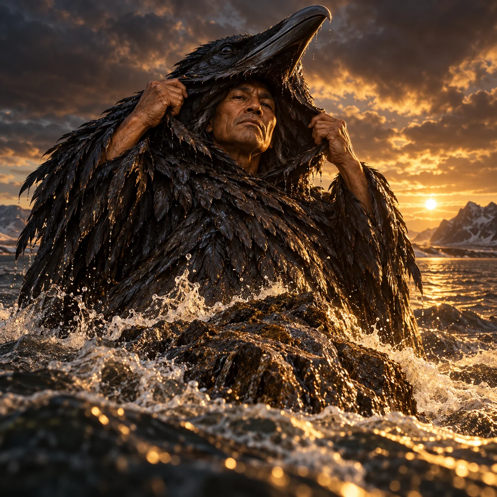
Raven Father lifting his beak like a hood to reveal a human face while first land emerges from primordial water.
Aura: Visible beak-lifting transformation c03 and emergence of first land from water c02 distinguish the sacred creator from an ordinary raven.
Audit ciri dan sumber
- [object Object]
- [object Object]
- [object Object]
Native and 200px inspected: one transforming figure lifts raven beak/head as a hood to reveal human face; two human arms and no extra wings. Feather mantle fully opaque; first wet rock emerges in foreground sea spray. Tilted raven hood includes its physical eye as transitional remnant, not an independent second living head. Active transformation and primal land scene remain awe-inspiring at 200px; no text/aura/gore. Seven Sangar checks pass.
Review sumberONE original square premium painterly cinematic Mitoloka illustration of Father Raven, Tulungersaq, the revered Alaskan Raven Father credited with making earth when all was water.
ANATOMY: ONE sacred RAVEN transforming into ONE MAN by PUSHING UP HIS BEAK [father-raven-c03]. Depict transformation as a whole black raven-head HOOD whose long beak is tilted upward above ONE human face. TWO HUMAN HANDS lift the raven hood from sides, TWO arms replace wings; NO separate extra wings. ONE human face with two natural eyes under hood, no second bird eyes visible. Fully opaque black feather cloak covers body completely, two legs mostly hidden beneath cloak. Transformation is seamless, no wounds or gore.
MOMENT: Rise out of primordial water and forcefully lift beak-hood, revealing an intent wise adult face looking down at viewer, as a rugged mass of first EARTH rises beneath him through the moving water.
POWER: land physically emerges from water at his feet, reflecting his making the earth when everything was covered in water, no energy beams or magical glyphs [father-raven-c02].
SCALE & CAMERA: extreme water-level close low angle; raven hood, face and both lifting hands dominate square, new rock pushes through foreground water, no invented giant scale comparator.
LIGHT & WEATHER: one low warm Arctic sunset rims glossy raven feathers and emerging wet earth; deep walnut shadows, physical sea spray, dark sky.
SURFACE: wet black raven feathers, worn human skin, opaque dense feather cloak, rough freshly exposed wet rock, moving seawater.
SETTING: primordial water with first land emerging, contextual Alaskan Arctic coast [father-raven-c02,father-raven-c04].
MOOD: reverent awe at wise active creator and transformation, never evil monster, cute mascot, ordinary raven or decorative portrait.
HARD CONSTRAINTS: no text, lettering, inscriptions, logo, border, frame or watermark; no extra heads, limbs or fingers; no design borrowed from any film, game, anime or comic; no nudity or explicit gore; no generic glow aura, neon outline or energy ribbons. Premium painterly brushwork, dark warm walnut and antique gold palette, square composition.
fengli
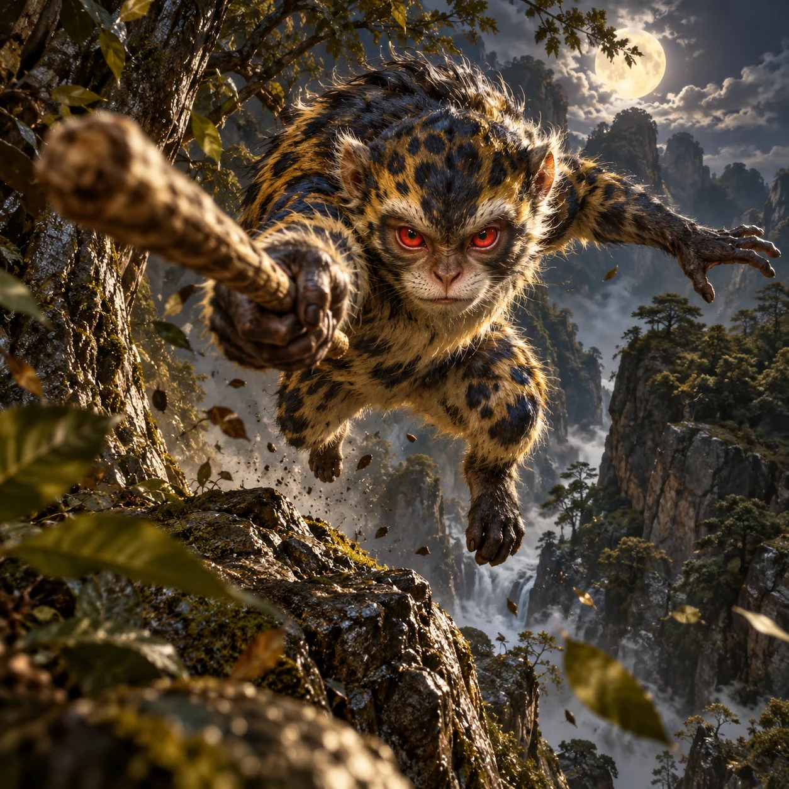
Small red-eyed monkey-shaped wind-leaper with leopard-like blue-yellow-black markings, near-absent tail and small staff.
Aura: Wind leap c09 and tiny staff c12 combined with red eyes/strange marked coat c08 distinguish from an ordinary animal; no aura.
Audit ciri dan sumber
- [object Object]
- [object Object]
- [object Object]
- [object Object]
Native and 200px inspected: small short-tailed monkey-like wind leaper with two red eyes, blue/ochre/black leopard markings, two hands and two feet, one small staff aimed toward viewer; no wings or invented membranes. All four limbs distinct in leap. Red gaze and pointed staff give uncanny confrontation at thumbnail with active cliff traversal. No text/aura; seven Sangar checks pass.
Review sumberONE original square premium painterly cinematic Mitoloka illustration of Fengli, the strange small wind-leaping mammal of classical Chinese mountain lore.
ANATOMY: ONE small MONKEY-like mammal as large as an otter, one head, TWO vivid natural RED EYES, TWO arms, TWO legs, tail so short as to be practically absent; short coarse fur BLUE-YELLOW AND BLACK with LEOPARD-LIKE MARKINGS, NOT plain brown monkey [fengli-c08]. ONE small rough wooden STAFF held in one hand [fengli-c12]. No wings, no gliding membranes, no long tail.
MOMENT: Leap boldly across a rocky forest chasm directly toward the viewer with the night wind, one hand thrusting its little staff straight at camera, other hand extended for balance, two hind legs clearly apart behind it; red eyes fixed intensely on viewer.
POWER: leaps with wind across cliffs and trees like a bird, but has NO wings; physically streaming fur, whipping leaves and dust demonstrate air movement. Staff points at quarry as in account, no energy beam or visible magic binding [fengli-c09,fengli-c12].
SCALE & CAMERA: extreme close low angle; animal and staff fill foreground, oversized leaves and nearby bark establish its small real scale, not a giant monkey.
LIGHT & WEATHER: ONE dominant moon shaft rims red eyes, blue-ochre spotted fur and wood staff, deep walnut shadows, physical windblown leaves.
SURFACE: coarse slate-blue/ochre fur with black leopard marks, wet bark, gritty rock, weathered little wood staff.
SETTING: high mountain forest and rocky chasm in Lingnan [fengli-c08].
MOOD: uncanny, fierce small supernatural hunter in decisive leap, never cute pet or ordinary monkey.
HARD CONSTRAINTS: no text, lettering, inscriptions, logo, border, frame or watermark; no extra heads, limbs or fingers; no design borrowed from any film, game, anime or comic; no nudity or explicit gore; no generic glow aura, neon outline or energy ribbons. Premium painterly brushwork, dark warm walnut and antique gold palette, square composition.
Gaizkin
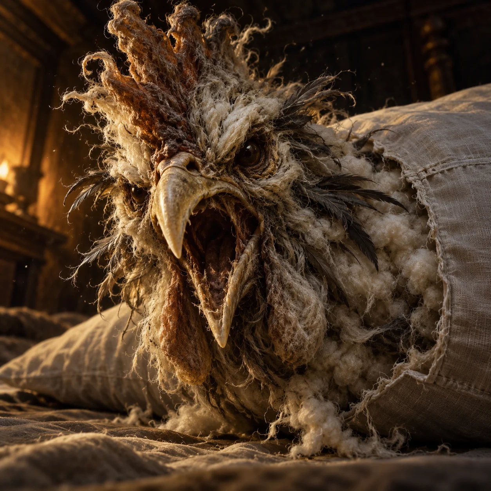
Hideous rooster head taking shape from pillow wool; no rooster body.
Aura: Documented rooster head made from pillow stuffing c04, not an ordinary rooster, creates close uncanny menace without magic aura.
Audit ciri dan sumber
- [object Object]
- [object Object]
- [object Object]
Native and 200px inspected: exactly one hideous rooster head formed from tangled pillow wool and feathers, beak open, wool comb/wattles, emerges from split pillow seam. No body/legs/wings invented. Material stuffing anatomy differentiates from ordinary rooster; extreme close active emergence remains threatening at 200px. No victim, gore, text or aura. All seven Sangar checks pass.
Review sumberONE original square premium painterly cinematic Mitoloka illustration of Gaizkin, the Basque malevolent night spirit that forms a hideous rooster head in pillow stuffing.
ANATOMY: ONLY ONE living-looking ROOSTER HEAD, no bird body, wings, legs or human parts. A head-shaped formation of tangled PILLOW WOOL AND FEATHERS, with a sharp hooked rooster beak, two recessed dark avian eyes, coarse fibrous comb and hanging wool-wattle shapes. All anatomy visibly constructed from twisted off-white, soot-grey and dull ochre stuffing fibres; no normal red-skinned farm rooster [gaizkin-c04].
MOMENT: Push the woollen head forcefully out of a torn pillow seam toward the viewer, beak OPEN in silent menace, tangled fibres clawing outward as the stuffing gathers into a clear hideous rooster face. The head fills most of square, forward aggressive angle, no human victim.
POWER: the night spirit works and shapes wool within pillow stuffing, associated with sickness; show only the documented material formation, no invented disease mist, rays or visible suffering [gaizkin-c01,gaizkin-c02,gaizkin-c04].
SCALE & CAMERA: extreme macro low close angle across a pillow on a bed, head and split pillow seam dominate, surrounding coarse cloth establishes small size; never a giant rooster.
LIGHT & WEATHER: one low off-frame warm hearth light sharply rakes beak and coarse wool comb, deep walnut-black bedroom shadows, ordinary dust fibres suspended in air.
SURFACE: rough tangled pillow wool, frayed linen seam, stray feathers, dry matted fibres, worn bed timber.
SETTING: the hidden underside of a household pillow at night [gaizkin-c02,gaizkin-c04].
MOOD: profoundly uncanny and threatening supernatural object, never cute, fluffy mascot, ordinary rooster or calm pillow.
HARD CONSTRAINTS: no text, lettering, inscriptions, logo, border, frame or watermark; no extra heads, limbs or fingers; no design borrowed from any film, game, anime or comic; no nudity or explicit gore; no generic glow aura, neon outline or energy ribbons. Premium painterly brushwork, dark warm walnut and antique gold palette, square composition.
Galar
Menunggu gambar yang lolos audit
Gangcheori
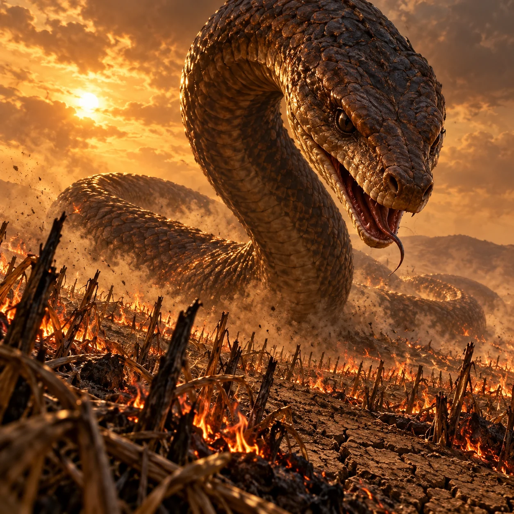
Dragon-shaped drought monster passing across withered farmland, using burn/drought tradition rather than foal or rain variant.
Aura: The dragon-shaped presence c01 and broad crop destruction c04/c05 establish danger through physical desiccation and burning rather than aura.
Audit ciri dan sumber
- [object Object]
- [object Object]
Native and 200px inspected: one huge serpentine dragon-shaped creature, one head/two eyes, one continuous coil/tail, no invented limbs/horns/wings. Active reared forward neck dominates over charred dry crop field, with physical stubble flames/cracked soil/ash matching burn-drought tradition. No firebreath/aura, victims, text or extra anatomy. Dangerous disaster presence at thumbnail, seven Sangar checks pass.
Review sumberONE original square premium painterly cinematic Mitoloka illustration of Gangcheori, the dragon-shaped Korean monster whose passing burns vegetation and ruins harvests.
ANATOMY: ONE immense DRAGON-SHAPED SERPENTINE MONSTER, ONE elongated reptilian head, TWO natural dark eyes, long heavy scaled coiling body, ONE continuous tail. Limbless conservative serpentine dragon realization, no wings, horns, antlers, spikes, whiskers, extra heads or glowing eyes [gangcheori-c01].
MOMENT: Rear its heavy neck high above the viewer and drive forward through desiccated crops, head bending down toward camera with mouth slightly open in a threatening hiss; coiled body ploughs across the ground behind.
POWER: vegetation physically withers and BURNS in a broad wake as it passes; blackened crop stalks, small natural orange flames along dry stubble, cracked drought soil, dust and heat shimmer. NO fire beam from mouth, NO magic aura, NO lightning. This is the burning/drought account, not the conflicting heavy-rain or foal account [gangcheori-c04,gangcheori-c05].
SCALE & CAMERA: extreme low angle inside dead field; enormous close dragon head and neck dominate; coils recede through rows of dead crops, no humans or victims.
LIGHT & WEATHER: one dominant low sun through dusty haze gives hard amber rim on dark scales, dull orange crop flames secondary; deep walnut shadows, ordinary drifting ash.
SURFACE: parched rough dark bronze-brown scales, cracked soil, crisp burnt stalks, moving dust and ash.
SETTING: devastated Korean farmland from its crop-ruining passage, no specific historical site asserted [gangcheori-c04,gangcheori-c05].
MOOD: overwhelming dangerous mythic disaster creature, active menace, never ordinary snake, cute or decorative.
HARD CONSTRAINTS: no text, lettering, inscriptions, logo, border, frame or watermark; no extra heads, limbs or fingers; no design borrowed from any film, game, anime or comic; no nudity or explicit gore; no generic glow aura, neon outline or energy ribbons. Premium painterly brushwork, dark warm walnut and antique gold palette, square composition.
Garkain
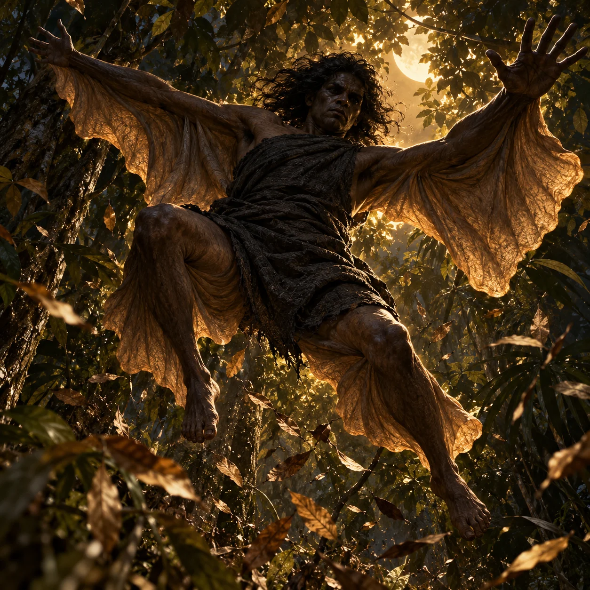
Nocturnal flying spirit-man displaying loose skin flaps on arms and legs in Arnhem Land forest.
Aura: Folding skin flight c02/c04 and close nocturnal descending figure create uncanny awe without invented power/aura.
Audit ciri dan sumber
- [object Object]
- [object Object]
- [object Object]
Native and 200px inspected: one spirit-man, two arms/two legs each clearly separate, broad loose skin folds along both arms and both legs, exactly four flapped limbs with no independent wings. Two five-fingered hands and two feet visible; opaque woven torso/pelvis wrap. Active descending nocturnal flight over leaves, stern intense face and billowing folds remain awe-inspiring at thumbnail. No sacred motifs, gore, victims, text or aura. All seven Sangar checks pass.
Review sumberONE original square premium painterly cinematic Mitoloka illustration of Garkain, the nocturnal flying spirit-man of Arnhem Land lore haunting the jungle of Magurlipun.
ANATOMY: ONE humanoid spirit-man with ONE head, TWO eyes, TWO arms and TWO legs. Very broad loose FOLDS OF SKIN hang along his arms and legs, opening into soft draping winglike FLAPS as he spreads arms and bends legs; membranes are attached to these FOUR limbs, NO separate added wings. Face shadowed and stern, no horns, fangs, extra eyes or invented sacred markings. An opaque dark plain woven wrap covers torso, pelvis and upper thighs fully [garkain-c02,garkain-c06].
MOMENT: Descend from a canopy of dark leaves toward a low camera, arms fully spread and knees bent so loose skin flaps billow into large scalloped shapes around limbs; feet clearly separate, one palm turned forward. Look down with grave uncanny intensity. No people, victims, assault, feeding, blood or injury.
POWER: documented nocturnal flight, physically dislodging a rush of ordinary dry leaves as he rises from daytime leaf cover; no energy beams, magic fog or glow [garkain-c03,garkain-c04].
SCALE & CAMERA: extreme low forest-floor close angle; spirit and opened skin folds dominate square. Human-like size via close framing, not invented giant scale.
LIGHT & WEATHER: one dominant warm moonlight shaft filtered through leaves, amber rim on folded membranes and silhouetted hands, deep walnut shadows and ordinary airborne leaf litter.
SURFACE: matte leathery folded skin, rough opaque cloth, damp tree bark, dry and wet tropical leaves.
SETTING: dense jungle of Magurlipun in Arnhem Land [garkain-c01].
MOOD: reverently uncanny and awe-inspiring spirit in active flight, never caricature, cute, ordinary human or decorative bat.
HARD CONSTRAINTS: no text, lettering, inscriptions, logo, border, frame or watermark; no extra heads, limbs or fingers; no design borrowed from any film, game, anime or comic; no nudity or explicit gore; no generic glow aura, neon outline or energy ribbons. Premium painterly brushwork, dark warm walnut and antique gold palette, square composition.